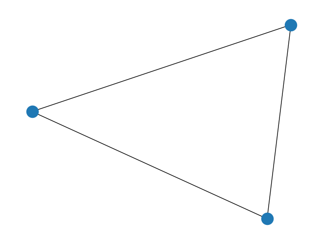
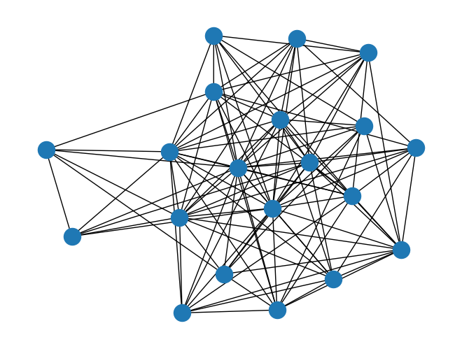
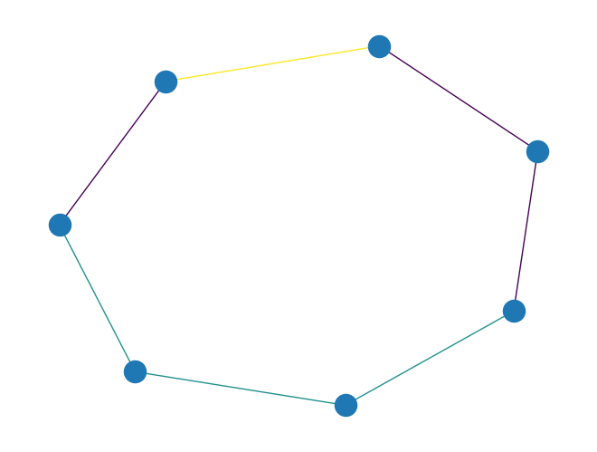
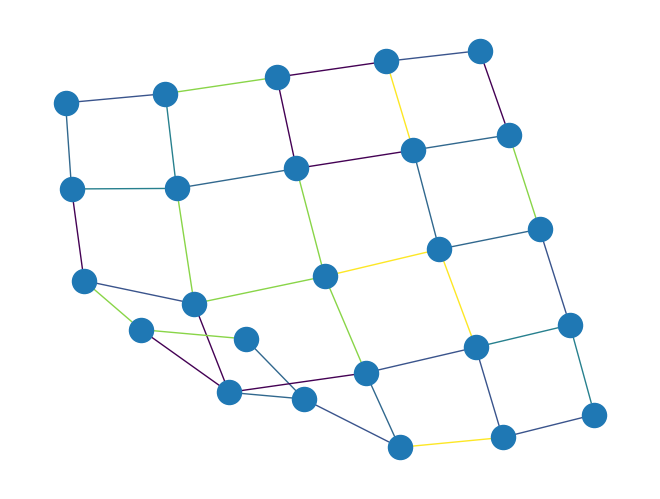
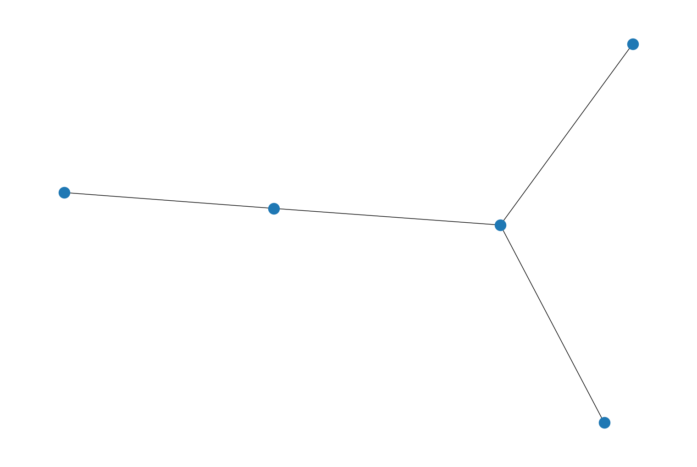
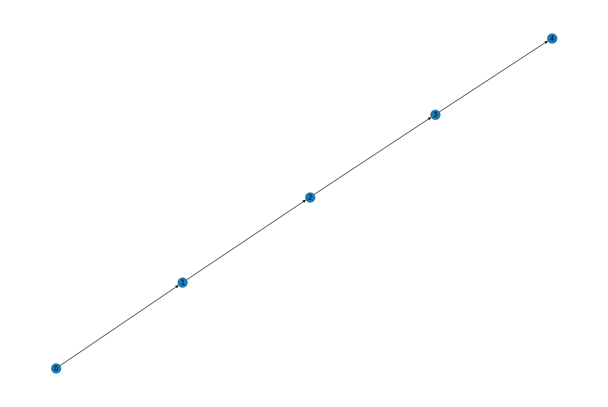

Release Notes#
0.15.1#
Prelude#
This release is a bugfix patch release that fixes an inadvertent breaking API change for the graphviz_draw() function in the 0.15.0 release.
Bug Fixes#
Fixed an issue in the
graphviz_draw(),PyGraph.to_dot(), andPyDiGraph.to_dot()which was incorrectly escaping strings when upgrading to 0.15.0. In earlier versions of rustworkx if you manually placed quotes in a string for an attr callback to get that to pass through to the output dot file, this was incorrectly being converted in rustworkx 0.15.0 to duplicate the quotes and escape them. For example, if you defined a callback like:def color_node(_node): return { "color": '"#422952"' }
to set the color attribute in the output dot file with the string
"#422952"(with the quotes), this was incorrectly being converted to"\"#422952\"". This no longer occurs, in rustworkx 0.16.0 there will likely be additional options exposed ingraphviz_draw(),PyGraph.to_dot(), andPyDiGraph.to_dot()to expose further options around this.
Fixed two bugs in the node position calculation done by the generator functions
hexagonal_lattice_graph()anddirected_hexagonal_lattice_graph()whenwith_positions = True:Corrected a scale factor that made all the hexagons in the lattice irregular
Corrected an indexing bug that positioned the nodes in the last column of the lattice incorrectly when
periodic = Falseandcolsis odd
0.15.0#
Prelude#
This is a new feature release of Rustworkx that adds many new features to the library. The highlights of this release are:
An expansion of functions in rustworkx-core that previously only existed in the Python API.
Expanded graph coloring algorithms
This release moves to using the Python Stable ABI, while this release officially supports Python 3.8 through 3.12, the published binaries should be compatible with future Python versions too. Although there is no guarantee provided about future versions. Additionally, the minimum supported Rust version for building rustworkx and more importantly rustworkx-core is now 1.70.0. Additionally, in this release the macOS arm64 platform has been promoted from Tier 4 to Tier 1.
New Features#
Added a method
has_node()to thePyGraphandPyDiGraphclasses to check if a node is in the graph.
Added a new function
rustworkx_core::dag_algo::layersto rustworkx-core to get the layers of a directed acyclic graph. This is equivalent to thelayers()function that existed in the Python API but now exposes it for Rust users too.
Added two new functions,
from_node_link_json_file()andparse_node_link_json(), which are used to parse a node link json object and generate a rustworkxPyGraphorPyDiGraphobject from it.
Added a new function
ancestors()to therustworkx_core::traversalmodule. That is a generic Rust implementation for the core rust library that provides theancestors()function to Rust users.
Added a new function
descendants()to therustworkx_core::traversalmodule. That is a generic Rust implementation for the core rust library that provides thedescendants()function to Rust users.
Added a new function
bfs_predecessors()to therustworkx_core::traversalmodule. That is a generic Rust implementation for the core rust library that provides thebfs_predecessors()function to Rust users.
Added a new function
bfs_successors()to therustworkx_core::traversalmodule. That is a generic Rust implementation for the core rust library that provides thebfs_successors()function to Rust users.
Added a new function
collect_runsto rustworkx-coresdag_algomodule. Previously, thecollect_runs()functionality for DAGs was only exposed via the Python interface. Now Rust users can take advantage of this functionality inrustworkx-core.
Added a function
connected_subgraphs()to determine all connected subgraphs of size \(k\) in polynomial delay for undirected graphs. This improves upon the brute-force method by two orders of magnitude for sparse graphs such as heavy-hex, enabling addressing larger graphs and for a larger \(k\). The introduced method is based on Enumerating Connected Induced Subgraphs: Improved Delay and Experimental Comparison by Christian Komusiewicz and Frank Sommer. In particular, the procedureSimpleis implemented. Possible runtime improvement can be gained by parallelization over each recursion or by following the discussion in Lemma 4 of above work and thus implementing intermediate sets \(X\) and \(P\) more efficiently.
Rustworkx functions that return custom iterable objects, such as
PyDiGraph.node_indices(), now each have an associated custom iterator and reversed-iterator object for these. This provides a speedup of approximately 40% for iterating through the custom iterables.These types are not directly nameable or constructable from Python space, and other than the performance improvement, the behavior should largely not be noticable from Python space.
Added
rustworkx.generators.dorogovtsev_goltsev_mendes_graph()that generates deterministic scale-free graphs using the Dorogovtsev-Goltsev-Mendes iterative procedure.import rustworkx as rx from rustworkx.visualization import mpl_draw graph = rx.generators.dorogovtsev_goltsev_mendes_graph(2) mpl_draw(graph)
Added a new function,
rustworkx_core::generators::dorogovtsev_goltsev_mendes_graph, to rustworkx-core that is used to generate deterministic scale-free graphs using the Dorogovtsev-Goltsev-Mendes iterative procedure.
Node contraction is now supported for
petgraphtypesStableGraphandGraphMapin rustworkx-core. To use it, import one of theContractNodes*traits fromgraph_extand call thecontract_nodesmethod on your graph.
All current
petgraphdata structures now support testing for parallel edges inrustworkx-core. To use this, importHasParallelEdgesDirectedorHasParallelEdgesUndirecteddepending on your graph type, and call thehas_parallel_edgesmethod on your graph.
A new trait
NodeRemovablehas been added tograph_extmodule inrustworkx-corewhich provides a consistent interface for performing node removal operations onpetgraphtypesGraph,StableGraph,GraphMap, andMatrixGraph. To use it, importNodeRemovablefromgraph_ext.
Adds new random graph generator function,
hyperbolic_random_graph()to sample the hyperbolic random graph model. For example:import math import rustworkx as rx from rustworkx.visualization import mpl_draw graph = rx.hyperbolic_random_graph( [[math.sinh(0.5), 0, 3.14159], [-math.sinh(1), 0, -3.14159]], 2.55, None, ) mpl_draw(graph)
Adds new function to the rustworkx-core module
rustworkx_core::generatorshyperbolic_random_graph()that samples the hyperbolic random graph model.
lexicographical_topological_sort()andTopologicalSorternow both accept aninitialkeyword argument, which can be used to limit the returned topological orderings to be only over the nodes that are dominated by theinitialset. This can provide performance improvements by removing the need for a search over all graph nodes to determine the initial set of nodes with zero in degree; this is particularly relevant toTopologicalSorter, where the user may terminate the search after only examining part of the order.
Added a new function,
is_semi_connected()which will check if a :class: ~rustworkx.PyDiGraph object is semi-connected.
Added a new function
lexicographical_topological_sortto therustworkx_core::dag_algomodule. That is a gneric Rust implementation for the core rust library that provides thelexicographical_topological_sort()function to Rust users.
Added a new function
digraph_maximum_bisimulation()to compute the maximum bisimulation or relational coarsest partition of a graph. This function is based on the algorithm described in the publication Three partition refinement algorithms by Paige and Tarjan. This function recieves a graph and returns aRelationalCoarsestPartition.
Added a new class
RelationalCoarsestPartitionto output the maximum bisimulation or relational coarsest partition of a graph. This class contains instances ofIndexPartitionBlockand can be iterated over.
Added a new class
IndexPartitionBlockto output a block of a node partition. This class is an iterator over node indices.
Added a new function
collect_bicolor_runsto rustworkx-coresdag_algomodule. Previously, thecollect_bicolor_runs()functionality for DAGs was only exposed via the Python interface. Now Rust users can take advantage of this functionality inrustworkx-core.
Added a new module
dag_algoto rustworkx-core which contains a new functionlongest_pathfunction to rustworkx-core. Previously thelongest_path()functionality for DAGs was only exposed via the Python interface. Now Rust users can take advantage of this functionality in rustworkx-core.
Added two new keyword arguments,
periodicanwith_positions, to the generator functionshexagonal_lattice_graph()anddirected_hexagonal_lattice_graph(). If periodic is set toTruethe boundaries of the lattice will be joined to form a periodic grid. If thewith_positionsargument is set toTruethan the data payload of all the nodes will be set to a tuple of the form(x, y)where x and y represent the nodes position in the lattice. For example:import rustworkx as rx from rustworkx.visualization import mpl_draw graph = rx.generators.hexagonal_lattice_graph(4, 4, periodic=True, with_positions=True) mpl_draw(graph, with_labels=True, labels=str)
Added a new rustworkx-core function
rustworkx_core::generators::hexagonal_lattice_graph_weighted()which is used to generate a hexagonal lattice graph where a callback is used to generate the node weights for each node from a tuple of the form(usize, usize).
Added the
PyDiGraph.remove_node_retain_edges_by_id()andremove_node_retain_edges_by_key()methods, which provide a node-removal that is linear in the degree of the node, as opposed to quadratic likeremove_node_retain_edges(). These methods require, respectively, that the edge weights are referentially identical if they should be retained (a is b, in Python), or that you can supply akeyfunction that produces a Python-hashable result that is used to do the equality matching between input and output edges.
Added a new class
ColoringStrategyused to specify the strategy used by the greedy node and edge coloring algorithms. TheDegreestrategy colors the nodes with higher degree first. TheSaturationstrategy dynamically chooses the vertex that has the largest number of different colors already assigned to its neighbors, and, in case of a tie, the vertex that has the largest number of uncolored neighbors. TheIndependentSetstrategy finds independent subsets of the graph, and assigns a different color to each of these subsets.
The rustworkx-core
coloringmodule has 2 new functions,greedy_node_color_with_coloring_strategyandgreedy_edge_color_with_coloring_strategy. These functions color respectively the nodes or the edges of the graph using the specified coloring strategy and handling the preset colors when provided.
Added a new keyword argument,
strategy, tograph_greedy_color()and tograph_greedy_edge_color()to specify the greedy coloring strategy.For example:
import rustworkx as rx from rustworkx.visualization import mpl_draw graph = rx.generators.generalized_petersen_graph(5, 2) coloring = rx.graph_greedy_color(graph, strategy=rx.ColoringStrategy.Saturation) colors = [coloring[node] for node in graph.node_indices()] layout = rx.shell_layout(graph, nlist=[[0, 1, 2, 3, 4],[6, 7, 8, 9, 5]]) mpl_draw(graph, node_color=colors, pos=layout)
Added a new keyword argument,
preset_color_fn, tograph_greedy_edge_color()which is used to provide preset colors for specific edges when computing the graph coloring. You can optionally pass a callable to that argument which will be passed edge index from the graph and is either expected to return an integer color to use for that edge, or None to indicate there is no preset color for that edge. For example:import rustworkx as rx from rustworkx.visualization import mpl_draw graph = rx.generators.generalized_petersen_graph(5, 2) def preset_colors(edge_index): if edge_index == 0: return 3 coloring = rx.graph_greedy_edge_color(graph, preset_color_fn=preset_colors) colors = [coloring[edge] for edge in graph.edge_indices()] layout = rx.shell_layout(graph, nlist=[[0, 1, 2, 3, 4], [6, 7, 8, 9, 5]]) mpl_draw(graph, edge_color=colors, pos=layout)
Adds new random graph generator in rustworkx for the stochastic block model. There is a generator for directed
directed_sbm_random_graph()and undirected graphsundirected_sbm_random_graph().import numpy as np import rustworkx as rx from rustworkx.visualization import mpl_draw graph = rx.undirected_sbm_random_graph( [2, 1], np.array([[1, 1], [1, 0]], dtype=float), False, ) mpl_draw(graph)

Adds new function
sbm_random_graphto the rustworkx-core modulerustworkx_core::generatorsthat samples a graph from the stochastic block model.
rustworkx wheels are now built against Pythons stable Application Binary Interface (ABI). For rustworkx users, this means that wheels distributed by us via PyPI will continue to work with newer versions of Python without having to recompile the code. This change will also simplify the release process for the developers and reduce the storage size required to mirror rustworkx wheels.
TopologicalSorternow has acheck_argskeyword argument, which can be set toFalseto disable the runtime detection of invalid arguments todone(). This provides a memory and runtime improvement to the online sorter, at the cost that the results will be undefined and likely meaningless if invalid values are given.
TopologicalSorter.done()now accepts single integers, in addition to lists of integers. This can be a sizeable performance improvement for algorithms that iterate through nodes, and only conditionally mark them as done; there is no longer a need to allocate a temporary Python array.
lexicographical_topological_sort()andTopologicalSorternow accept areversekeyword argument, which can be set toTrueto find a reversed topological ordering. This is a topological ordering that would be found if all the edges in the graph had their directions reversed.
Upgrade Notes#
The minimum supported rust version to build rustworkx and rustworkx-core has been raised from 1.64 to 1.70. You will need to upgrade your rust compiler version to at least version 1.70 to continue building from source. Python library users who are installing rustworkx on a supported platform will not need to make any changes.
The
rustworkx-corefunctionrustworkx_core::connectivity::find_cyclenow requires thepetgraph::visit::Visitabletrait for its input argumentgraph. This was required to fix the behavior whensourceisNoneto ensure we always find a cycle if one exists.
The interface of the
rustworkx_core::generators::hexagonal_lattice_graph()function has been changed, there is a new required boolean argumentperiodicwhich is used to indicate whether the output graph should join the bondaries of the lattice to form a periodic grid or not. This argument didnt exist in prior releases of rustworkx-core and it will need to be added when upgrading to this new release.
Bug Fixes#
Fixed the behavior of
digraph_find_cycle()when no source node was provided. Previously, the function would start looking for a cycle at an arbitrary node which was not guaranteed to return a cycle. Now, the function will smartly choose a source node to start the search from such that if a cycle exists, it will be found.
Fixed an issue with the
graphviz_draw()where it would not correctly escape special characters in all scenarios. This has been corrected so you can now use special characters with the function, for example:import rustworkx as rx from rustworkx.visualization import graphviz_draw graphviz_draw( rx.generators.path_graph(2), node_attr_fn=lambda x: {"label": "the\nlabel", "tooltip": "the\ntooltip"}, )
Fixed: #750
Fixed the plots of multigraphs using
mpl_draw(). Previously, parallel edges of multigraphs were plotted on top of each other, with overlapping arrows and labels. The radius of parallel edges of the multigraph was fixed to be 0.25 for connectionstyle supporting this argument indraw_edges(). The edge lables were offset to 0.25 indraw_edge_labels()to align with their respective edges. This fix can be tested using the following code:import rustworkx from rustworkx.visualization import mpl_draw graph = rustworkx.PyDiGraph() graph.add_node('A') graph.add_node('B') graph.add_node('C') graph.add_edge(1, 0, 2) graph.add_edge(0, 1, 3) graph.add_edge(1, 2, 4) mpl_draw(graph, with_labels=True, labels=str, edge_labels=str, alpha=0.5)
Fixed #774
Fixed a bug in the type hint for the
mpl_draw(). Previously, the type hint indicated that allkwargswere required when calling the method. The type annotation has been updated to indicate thatkwargswith partial arguments is allowed.
Fixed an issue with the Dijkstra path functions:
where a
PanicExceptionwas raised without much detail when an invalid node index was passed in to thesourceargument. This has been corrected so anIndexErroris raised instead. Fixed #1117
Fixed the bug type hint for the
bfs_search(),dfs_search()anddijkstra_search(). Refer to #1130 for more information.
Fixed support for handling
Longtype attributes from input GraphML in theread_graphml()function. Fixed #1140.
Other Notes#
Support for the arm64 macOS platform has been promoted from Tier 4 to Tier 1. Previously the platform was at Tier 4 because there was no available CI environment for testing rustworkx on the platform. Now that Github has made an arm64 macOS environment available to open source projects [1] were testing the platform along with the other Tier 1 supported platforms.
For developement of rustworkx the automated testing environment tooling used has switched from Tox to instead Nox. This is has no impact for end users and is only relevant if you contribute code to rustworkx.
0.14.0#
Prelude#
This is a new feature release of Rustworkx that adds many new features to the library. The highlights of this release are:
Fully type annotated for support with mypy and other tooling
Improvements to the graph coloring functions
This release supports running with Python 3.8 through 3.12. The minimum supported Rust version for building rustworkx and rustworkx-core from source is now 1.64.0. The minimum supported version of macOS for this release has been increased from 10.9 to 10.12. Also, the Linux ppc64le and s390x platform support has been downgraded from Tier 3 to Tier 4.
New Features#
Added two new random graph generator functions,
directed_barabasi_albert_graph()andbarabasi_albert_graph(), to generate a random graph using BarabsiAlbert preferential attachment to extend an input graph. For example:import rustworkx from rustworkx.visualization import mpl_draw starting_graph = rustworkx.generators.path_graph(10) random_graph = rustworkx.barabasi_albert_graph(20, 10, initial_graph=starting_graph) mpl_draw(random_graph)

Added a new function to the rustworkx-core module
rustworkx_core::generatorsbarabasi_albert_graph()which is used to generate a random graph using BarabsiAlbert preferential attachment to extend an input graph.
Added a new function
all_shortest_paths()(and the graph type specific variants:graph_all_shortest_paths()anddigraph_all_shortest_paths()) that finds every simple shortest path two nodes in a graph.
Added a new function to the
rustworkx-coremodulerustworkx_core::shortest_pathmoduleall_shortest_path()which is used to find every simple shortest path in a graph.
Added a new function
two_colorto the rustworkx-corerustworkx_core::coloringmodule. This function is used to compute a two coloring of a graph and can also be used to determine if a graph is bipartite as it returnsNonewhen a two coloring is not possible.
Added a new function,
two_color(), which is used to compute a two coloring for a graph. For example:import rustworkx as rx from rustworkx.visualization import mpl_draw graph = rx.generators.heavy_square_graph(5) colors = rx.two_color(graph) mpl_draw(graph, node_color=[colors[i] for i in range(len(graph))])
Added a new function,
is_bipartite()to determine whether a given graph object is bipartite or not.
Added a new function,
bridges()that finds the bridges of an undirectedPyGraph. Bridges are edges that, if removed, would increase the number of connected components of a graph. For example:import rustworkx from rustworkx.visualization import mpl_draw graph = rustworkx.PyGraph() graph.extend_from_edge_list([ (0, 1), (1, 2), (0, 2), (1, 3) ]) bridges = rustworkx.bridges(graph) bridges_set = [set(edge) for edge in bridges] colors = [] for edge in graph.edge_list(): color = "red" if set(edge) in bridges_set else "black" colors.append(color) mpl_draw(graph, edge_color=colors)
Added a new function
bridgesto therustworkx_core:connectivity:biconnectedmodule that finds the bridges of an undirected graph. Bridges are edges that, if removed, would increase the number of connected components of a graph. For example:
Added a new function,
clear_edges()that clears all edges forPyGraphorrustworkx.PyDiGraphwithout modifying nodes.
Added method
edge_indices_from_endpoints()which returns the indices of all edges between the specified endpoints. ForPyDiGraphthere is a corresponding method that returns the directed edges.
The
PyGraphand thePyDiGraphclasses have a new methodfilter_nodes()(orfilter_nodes()). This method returns aNodeIndicesobject with the resulting nodes that fit some abstract criteria indicated by a filter function. For example:from rustworkx import PyGraph graph = PyGraph() graph.add_nodes_from(list(range(5))) # Adds nodes from 0 to 5 def my_filter_function(node): return node > 2 indices = graph.filter_nodes(my_filter_function) print(indices)
NodeIndices[3, 4]
The
PyGraphand thePyDiGraphclasses have a new methodfilter_edges()(orfilter_edges()). This method returns aEdgeIndicesobject with the resulting edges that fit some abstract criteria indicated by a filter function. For example:from rustworkx import PyGraph from rustworkx.generators import complete_graph graph = PyGraph() graph.add_nodes_from(range(3)) graph.add_edges_from([(0, 1, 'A'), (0, 1, 'B'), (1, 2, 'C')]) def my_filter_function(edge): if edge: return edge == 'B' return False indices = graph.filter_edges(my_filter_function) print(indices)
EdgeIndices[1]
Added a new algorithm function,
rustworkx.floyd_warshall_successor_and_distance(), that calculates the shortest path distance and the successor nodes for all node pairs inPyGraphandPyDiGraphgraphs.
Added a new function,
graph_line_graph()to construct a line graph of aPyGraphobject.The line graph \(L(G)\) of a graph \(G\) represents the adjacencies between edges of G. \(L(G)\) contains a vertex for every edge in \(G\), and \(L(G)\) contains an edge between two vertices if the corresponding edges in \(G\) have a vertex in common.
import rustworkx as rx from rustworkx.visualization import mpl_draw graph = rx.PyGraph() node_a = graph.add_node("a") node_b = graph.add_node("b") node_c = graph.add_node("c") node_d = graph.add_node("d") edge_ab = graph.add_edge(node_a, node_b, 1) edge_ac = graph.add_edge(node_a, node_c, 1) edge_bc = graph.add_edge(node_b, node_c, 1) edge_ad = graph.add_edge(node_a, node_d, 1) out_graph, out_edge_map = rx.graph_line_graph(graph) assert out_graph.node_indices() == [0, 1, 2, 3] assert out_graph.edge_list() == [(3, 1), (3, 0), (1, 0), (2, 0), (2, 1)] assert out_edge_map == {edge_ab: 0, edge_ac: 1, edge_bc: 2, edge_ad: 3} mpl_draw(out_graph, with_labels=True)
Added a new function,
graph_greedy_edge_color()to color edges of aPyGraphobject using a greedy approach.This function works by greedily coloring the line graph of the given graph.
import rustworkx as rx from rustworkx.visualization import mpl_draw graph = rx.generators.cycle_graph(7) edge_colors = rx.graph_greedy_edge_color(graph) assert edge_colors == {0: 0, 1: 1, 2: 0, 3: 1, 4: 0, 5: 1, 6: 2} mpl_draw(graph, edge_color=[edge_colors[i] for i in range(graph.num_edges())])

Added a new function,
graph_misra_gries_edge_color()to color edges of aPyGraphobject using the Misra-Gries edge coloring algorithm.The above algorithm is described in the paper paper: A constructive proof of Vizings theorem by Misra and Gries, 1992.
The coloring produces at most \(d + 1\) colors where \(d\) is the maximum degree of the graph.
import rustworkx as rx from rustworkx.visualization import mpl_draw graph = rx.generators.cycle_graph(7) edge_colors = rx.graph_misra_gries_edge_color(graph) assert edge_colors == {0: 0, 1: 1, 2: 2, 3: 0, 4: 1, 5: 0, 6: 2} mpl_draw(graph, edge_color=[edge_colors[i] for i in range(graph.num_edges())])
Added a new function,
isolates(), which is used to find the isolates (nodes with a degree of 0) in aPyDiGraphorPyGraph.
Added a new function,
isolates()to the rustworkx-corerustworkx_core::connectivitymodule which is used to find the isolates (nodes with a degree of 0).
Added method substitute_node_with_subgraph to the PyGraph class.
import rustworkx from rustworkx.visualization import * # Needs matplotlib/ graph = rustworkx.generators.complete_graph(5) sub_graph = rustworkx.generators.path_graph(3) # Replace node 4 in this graph with sub_graph # Make sure to connect the graphs at node 2 of the sub_graph # This is done by passing a function that returns 2 graph.substitute_node_with_subgraph(4, sub_graph, lambda _, __, ___: 2) # Draw the updated graph mpl_draw(graph, with_labels=True)
Added a new function
topological_generations()which stratifies aPyDiGraphinto topological generations.
Added a new exception class
GraphNotBipartitewhich is raised when a graph is not bipartite. The sole user of this exception is thegraph_bipartite_edge_color()which will raise it when the user provided graph is not bipartite.
Added a new function,
graph_bipartite_edge_color()to color edges of aPyGraphobject. The function first checks whether a graph is bipartite, raising exception of typeGraphNotBipartiteif this is not the case. Otherwise, the function calls the algorithm for edge-coloring bipartite graphs, and returns a dictionary with key being the edge index and value being the assigned color.The implemented algorithm is based on the paper A simple algorithm for edge-coloring bipartite multigraphs by Noga Alon, 2003.
The coloring produces at most \(d\) colors where \(d\) is the maximum degree of a node in the graph. The algorithm runs in time \(\mathcal{O}(n + m\log{}m)\), where \(n\) is the number of vertices and \(m\) is the number of edges in the graph.
import rustworkx as rx from rustworkx.visualization import mpl_draw graph = rx.generators.cycle_graph(8) edge_colors = rx.graph_bipartite_edge_color(graph) assert edge_colors == {0: 0, 1: 1, 2: 0, 3: 1, 4: 0, 5: 1, 6: 0, 7: 1} mpl_draw(graph, edge_color=[edge_colors[i] for i in range(graph.num_edges())])
Added two new random graph generator functions,
directed_random_bipartite_graph()andundirected_random_bipartite_graph(), to generate a random bipartite graph. For example:import rustworkx as rx from rustworkx.visualization import mpl_draw random_graph = rx.undirected_random_bipartite_graph(10, 5, 0.5, seed=20) layout = rx.bipartite_layout(random_graph, set(range(10))) mpl_draw(random_graph, pos=layout)
The functions
graph_adjacency_matrix()anddigraph_adjacency_matrix()now have the option to adjust parallel edge behavior. Instead of just the default sum behavior, the value in the output matrix can be the minimum (min), maximum (max), or average (avg) of the weights of the parallel edges. For example:import rustworkx as rx graph = rx.PyGraph() a = graph.add_node("A") b = graph.add_node("B") c = graph.add_node("C") graph.add_edges_from([ (a, b, 3.0), (a, b, 1.0), (a, c, 2.0), (b, c, 7.0), (c, a, 1.0), (b, c, 2.0), (a, b, 4.0) ]) print("Adjacency Matrix with Summed Parallel Edges") print(rx.graph_adjacency_matrix(graph, weight_fn= lambda x: float(x))) print("Adjacency Matrix with Averaged Parallel Edges") print(rx.graph_adjacency_matrix(graph, weight_fn= lambda x: float(x), parallel_edge="avg"))
Adjacency Matrix with Summed Parallel Edges [[0. 8. 3.] [8. 0. 9.] [3. 9. 0.]] Adjacency Matrix with Averaged Parallel Edges [[0. 2.66666667 1.5 ] [2.66666667 0. 4.5 ] [1.5 4.5 0. ]]
The
rustworkxPython package is now fully typed with mypy. Building off of the previous 0.13.0 release which introduced partial type annotations to the library, rustworkx now includes type annotations for the entire public API.
Added a new exception class
InvalidMappingwhich is raised when a function receives an invalid mapping. The sole user of this exception is thegraph_token_swapper()which will raise it when the user provided mapping is not feasible on the provided graph.
Added
has_path()which accepts as arguments aPyGraphorPyDiGraphand checks if there is a path from source to destinationfrom rustworkx import PyDiGraph, has_path graph = PyDiGraph() a = graph.add_node("A") b = graph.add_node("B") c = graph.add_node("C") edge_list = [(a, b, 1), (b, c, 1)] graph.add_edges_from(edge_list) path_exists = has_path(graph, a, c) assert(path_exists == True) path_exists = has_path(graph, c, a) assert(path_exists == False)
Added a new keyword argument,
preset_color_fn, tograph_greedy_color()which is used to provide preset colors for specific nodes when computing the graph coloring. You can optionally pass a callable to that argument which will be passed node index from the graph and is either expected to return an integer color to use for that node, or None to indicate there is no preset color for that node. For example:import rustworkx as rx from rustworkx.visualization import mpl_draw graph = rx.generators.generalized_petersen_graph(5, 2) def preset_colors(node_index): if node_index == 0: return 3 coloring = rx.graph_greedy_color(graph, preset_color_fn=preset_colors) colors = [coloring[node] for node in graph.node_indices()] layout = rx.shell_layout(graph, nlist=[[0, 1, 2, 3, 4],[6, 7, 8, 9, 5]]) mpl_draw(graph, node_color=colors, pos=layout)
Added a new function
greedy_node_color_with_preset_colorsto the rustworkx-core modulecoloring. This new function is identical to therustworkx_core::coloring::greedy_node_colorexcept it has a second preset parameter which is passed a callable which is used to provide preset colors for particular node ids.
Added a new function,
transitive_reduction()which returns the transtive reduction of a givenPyDiGraphand a dictionary with the mapping of indices from the given graph to the returned graph. The given graph must be a Directed Acyclic Graph (DAG). For example:from rustworkx import PyDiGraph from rustworkx import transitive_reduction graph = PyDiGraph() a = graph.add_node("a") b = graph.add_node("b") c = graph.add_node("c") d = graph.add_node("d") e = graph.add_node("e") graph.add_edges_from([ (a, b, 1), (a, d, 1), (a, c, 1), (a, e, 1), (b, d, 1), (c, d, 1), (c, e, 1), (d, e, 1) ]) tr, _ = transitive_reduction(graph) list(tr.edge_list())
[(0, 1), (0, 2), (1, 3), (2, 3), (3, 4)]
Upgrade Notes#
The minimum supported rust version (MSRV) for rustworkx and rustworkx-core has been raised to 1.64.0. Previously you could build rustworkx or rustworkx-core using an MSRV of 1.56.1. This change was necessary as the upstream dependencies of rustworkx have adopted newer MSRVs.
The minimum required Python version was raised to Python 3.8. To use rustworkx, please ensure you are using Python >= 3.8.
The rustworkx function
graph_token_swapper()now will raise anInvalidMappingexception instead of aPanicExceptionwhen an invalid mapping is requested. This was done because aPanicExceptionis difficult to catch by design as it is used to indicate an unhandled error. Using
The return type of the
rustworkx-corefunctiontoken_swapper()has been changed fromVec<(NodeIndex, NodeIndex)>to beResult<Vec<(NodeIndex, NodeIndex)>, MapNotPossible>. This change was necessary to return an expected error condition if a mapping is requested for a graph that is not possible. For example is if you have a disjoint graph and youre trying to map nodes without any connectivity:use rustworkx_core::token_swapper; use rustworkx_core::petgraph; let g = petgraph::graph::UnGraph::<(), ()>::from_edges(&[(0, 1), (2, 3) ]); let mapping = HashMap::from([ (NodeIndex::new(2), NodeIndex::new(0)), (NodeIndex::new(1), NodeIndex::new(1)), (NodeIndex::new(0), NodeIndex::new(2)), (NodeIndex::new(3), NodeIndex::new(3)), ]); token_swapper(&g, mapping, Some(10), Some(4), Some(50));
will now return
Err(MapNotPossible)instead of panicking. If you were using this funciton before youll need to handle the result type.
Support for the Linux ppc64le pllatform has changed from tier 3 to tier 4 (as documented in Platform Support). This is a result of no longer being able to run tests during the pre-compiled wheel publishing jobs due to constraints in the available CI infrastructure. There hopefully shouldnt be any meaningful impact resulting from this change, but as there are no longer tests being run to validate the binaries prior to publishing them there are no longer guarantees that the wheels for ppc64le are fully functional (although the likelihood they are is still high as it works on other platforms). If any issues are encountered with ppc64le Linux please open an issue.
For macOS the minimum version of macOS is now 10.12. Previously, the precompiled binary wheel packages for macOS x86_64 were published with support for >=10.9. However, because of changes in the support policy for the Rust programming language the minimum version needed to raised to macOS 10.12. If youre using Qiskit on macOS 10.9 you can probably build Qiskit from source while the rustworkx MSRV (minimum supported Rust version) is < 1.74, but the precompiled binaries published to PyPI will only be compatible with macOS >= 10.12.
Support for the Linux s390x platform has changed from tier 3 to tier 4 (as documented in Platform Support). This is a result of no longer being able to run tests during the pre-compiled wheel publishing jobs due to constraints in the available CI infrastructure. There hopefully shouldnt be any meaningful impact resulting from this change, but as there are no longer tests being run to validate the binaries prior to publishing them there are no longer guarantees that the wheels for s390x are fully functional (although the likelihood they are is still high as it works on other platforms). If any issues are encountered with s390x Linux please open an issue.
Deprecation Notes#
The legacy
retworkxpackage that operates as a backwards compatibility alias forrustworkxhas been marked as deprecated. If youre using theretworkxpackage it will now emit aDeprecationWarningon import.
Bug Fixes#
Fixed the behavior of
graph_all_simple_paths()anddigraph_all_simple_paths()whenmin_depthis set to0. Refer to #955 for more information.
Fixed an issue where the
directed_gnp_random_graph()and thegnp_random_graph()for directed graphs produced a graph where lower node numbers had only a small number of edges compared to what was expected.
Other Notes#
This version of rustworkx is explicitly pinned to the Numpy 1.x series, because it includes compiled extensions that are not yet compiled against the as-yet-unreleased Numpy 2.x series. We will release a new version of rustworkx with Numpy 2.x support as soon as feasible.
We cannot prevent your package manager from resolving to older versions of rustworkx (which do not have the same pin but are still likely to be incompatible) if you forcibly try to install rustworkx alongside Numpy 2, before we have released a compatible version.
0.13.0#
Prelude#
This release is major feature release of Rustworkx that adds some new features to the library. The highlights of this release are:
An expansion of the functions exposed by rustworkx-core to including a new graph generator module.
New link analysis functions such as page rank
Expanded centrality measure functions
Added partial type annotations to the library including for the
PyDiGraphandPyGraphclasses. This enables type checking with mypy
This is also the final rustworkx release that supports running with Python 3.7. Starting in the 0.14.0 release Python >= 3.8 will be required to use rustworkx. This release also increased the minimum suported Rust version for compiling rustworkx and rustworkx-core from source to 1.56.1.
New Features#
Added a new method,
make_symmetric(), to thePyDiGraphclass. This method is used to make all the edges in the graph symmetric (there is a reverse edge in the graph for each edge). For example:import rustworkx as rx from rustworkx.visualization import graphviz_draw graph = rx.generators.directed_path_graph(5, bidirectional=False) graph.make_symmetric() graphviz_draw(graph)
Added a new function,
edge_betweenness_centrality()to compute edge betweenness centrality of all edges in aPyGraphorPyDiGraphobject. The algorithm used in this function is based on: Ulrik Brandes, On Variants of Shortest-Path Betweenness Centrality and their Generic Computation. Social Networks 30(2):136-145, 2008. Edge betweenness centrality of an edge \(e\) is the sum of the fraction of all-pairs shortest paths that pass through \(e\)\[c_B(e) =\sum_{s,t \in V} \frac{\sigma(s, t|e)}{\sigma(s, t)}\]where \(V\) is the set of nodes, \(\sigma(s, t)\) is the number of shortest \((s, t)\)-paths, and \(\sigma(s, t|e)\) is the number of those paths passing through edge \(e\). For example, the following computes the edge betweenness centrality for all edges in a 5x5 grid graph and uses the result to color the edges in a graph visualization:
import rustworkx from rustworkx.visualization import mpl_draw graph = rustworkx.generators.grid_graph(5, 5) btw = rustworkx.edge_betweenness_centrality(graph) # Color edges in graph visualization with edge betweenness centrality colors = [] for i in graph.edge_indices(): colors.append(btw[i]) mpl_draw(graph, edge_color=colors)

Added a new function to rustworkx-core
edge_betweenness_centralityto therustworkx_core:centralitymodule which computes the edge betweenness centrality of all edges in a given graph.
Two new functions,
find_cycleandcycle_basis, have been added to therustworkx-corecrate in theconnectivitymodule. These functions can be used to find a cycle in a petgraph graph or to find the cycle basis of a graph.
Added a new function,
hits()which is used to compute the hubs and authorities for all nodes in a given directed graph. For example:import rustworkx as rx from rustworkx.visualization import mpl_draw graph = rx.generators.directed_hexagonal_lattice_graph(2, 2) hubs, _ = rx.hits(graph) # Generate a color list colors = [] for node in graph.node_indices(): hub_score = hubs[node] graph[node] = hub_score colors.append(hub_score) mpl_draw( graph, with_labels=True, node_color=colors, node_size=650, labels=lambda x: "{0:.2f}".format(x) )
Added a new function,
katz_centrality()which is used to compute the Katz centrality for all nodes in a given graph. For example:import rustworkx as rx from rustworkx.visualization import mpl_draw graph = rx.generators.hexagonal_lattice_graph(4, 4) centrality = rx.katz_centrality(graph) # Generate a color list colors = [] for node in graph.node_indices(): centrality_score = centrality[node] graph[node] = centrality_score colors.append(centrality_score) mpl_draw( graph, with_labels=True, node_color=colors, node_size=650, labels=lambda x: "{0:.2f}".format(x) )
Added a new function to rustworkx-core
katz_centralityto therustworkx_core::centralitymodules which is used to compute the Katz centrality for all nodes in a given graph.
Added a new function,
longest_simple_path()which is used to search all the simple paths between all pairs of nodes in a graph and return the longest path found. For example:import rustworkx as rx graph = rx.generators.binomial_tree_graph(5) longest_path = rx.longest_simple_path(graph) print(longest_path)
NodeIndices[31, 30, 28, 24, 16, 0, 8, 12, 14, 15]
Then visualizing the nodes in the longest path found:
from rustworkx.visualization import mpl_draw path_set = set(longest_path) colors = [] for index in range(len(graph)): if index in path_set: colors.append('r') else: colors.append('#1f78b4') mpl_draw(graph, node_color=colors)
Added a new function
longest_simple_path_multiple_targets()to rustworkx-core. This function will return the longest simple path from a source node to aHashSetof target nodes.
Added a new function,
pagerank()which is used to compute the PageRank score for all nodes in a given directed graph. For example:import rustworkx as rx from rustworkx.visualization import mpl_draw graph = rx.generators.directed_hexagonal_lattice_graph(2, 2) ranks = rx.pagerank(graph) # Generate a color list colors = [] for node in graph.node_indices(): pagerank_score = ranks[node] graph[node] = pagerank_score colors.append(pagerank_score) mpl_draw( graph, with_labels=True, node_color=colors, node_size=650, labels=lambda x: "{0:.2f}".format(x) )
Three new random graph generators,
gnp_random_graph,gnm_random_graphandrandom_geometric_graph, have been added to therustworkx-corecrate in thegeneratorsmodule. Thegnp_random_graphtakes inputs of the number of nodes and a probability for adding edges. Thegnp_random_graphtakes inputs of the number of nodes and number of edges. Therandom_geometric_graphcreates a random graph within an n-dimensional cube.
Added a new function,
bfs_predecessors(), which is used to return a list of predecessors in a reversed bread-first traversal from a specified node. This is analogous to the existingbfs_successors()method.
Add a method
find_predecessor_node_by_edge()to get the immediate predecessor of a node which is connected by the specified edge.
Added a new function,
graph_token_swapper(), which performs an approximately optimal token swapping algorithm based on:Approximation and Hardness for Token Swapping by Miltzow et al. (2016) https://arxiv.org/abs/1602.05150
that supports partial mappings (i.e. not-permutations) for graphs with missing tokens.
Added a new function
token_swapper()to the newrustworkx-coremodulerustworkx_core::token_swapper. This function performs an approximately optimal token swapping algorithm based on:Approximation and Hardness for Token Swapping by Miltzow et al. (2016) https://arxiv.org/abs/1602.05150
that supports partial mappings (i.e. not-permutations) for graphs with missing tokens.
Added a new function,
closeness_centrality()to compute the closeness centrality of all nodes in aPyGraphorPyDiGraphobject.The closeness centrality of a node \(u\) is defined as the the reciprocal of the average shortest path distance to \(u\) over all \(n-1\) reachable nodes. In its general form this can be expressed as:
\[C(u) = \frac{n - 1}{\sum_{v=1}^{n-1} d(v, u)},\]where \(d(v, u)\) is the shortest-path distance between \(v\) and \(u\), and \(n\) is the number of nodes that can reach \(u\). For example, to visualize the closeness centrality of a graph:
import matplotlib.pyplot as plt import rustworkx as rx from rustworkx.visualization import mpl_draw graph = rx.generators.hexagonal_lattice_graph(4, 4) centrality = rx.closeness_centrality(graph) # Generate a color list colors = [] for node in graph.node_indices(): colors.append(centrality[node]) # Generate a visualization with a colorbar plt.rcParams['figure.figsize'] = [15, 10] ax = plt.gca() sm = plt.cm.ScalarMappable(norm=plt.Normalize( vmin=min(centrality.values()), vmax=max(centrality.values()) )) plt.colorbar(sm, ax=ax) plt.title("Closeness Centrality of a 4 x 4 Hexagonal Lattice Graph") mpl_draw(graph, node_color=colors, ax=ax)
Added new generator functions,
empty_graph(), anddirected_empty_graph()to therustworkx.generatorsmodule that will generate an empty graph. For example:import rustworkx.generators from rustworkx.visualization import mpl_draw graph = rustworkx.generators.empty_graph(4) mpl_draw(graph)
Added new generator functions,
complete_graph(), anddirected_complete_graph()to therustworkx.generatorsmodule that will generate a complete graph. These functions are equivalent to calling themesh_graph()anddirected_mesh_graph()functions. For example:import rustworkx.generators from rustworkx.visualization import mpl_draw graph = rustworkx.generators.complete_graph(4) mpl_draw(graph)
Added a new
generatorsmodule to therustworkx-corecrate. This module contains functions for generating graphs. These functions are generic on the output graph type and can be used to create graph objects for any type that implement the required petgraph traits.
Added partial type annotations to the library, including for the
PyDiGraphandPyGraphclasses. This enables statically type checking with mypy.
Added a new function,
greedy_node_color, torustworkx-corein a newcoloringmodule. It colors a graph using a greedy graph coloring algorithm.
The function
core_numberhas been added to therustworkx-corecrate in theconnectivitymodule. It computes the k-core number for the nodes in a graph.
Upgrade Notes#
Passing a negative value to the
probabilityargument to thegnp_directed_random_graph()or thegnp_undirected_random_graph()function will now cause anOverflowErrorto be raised. Previously, aValueErrorwould be raised in this situation. This was changed to be consistent with other similar error conditions in other functions in the library.
The minimum supported Rust version has been increased from 1.48 to 1.56.1. This applies to both building the rustworkx package from source as well as the rustworkx-core crate. This change was made to facilitate using newer versions of our upstream dependencies as well as leveraging newer Rust language features.
Bug Fixes#
Fixed the
check_cycleattribute not being preserved when copyingPyDiGraphwithcopy.copy()andcopy.deepcopy(). Fixed #836
Fixed an issue when using
copy.deepcopy()onPyDiGraphandPyGraphobjects when there were removed edges from the graph object. Previously, if there were any holes in the edge indices caused by the removal the output copy of the graph object would incorrectly have flatten the indices. This has been corrected so that the edge indices are recreated exactly after adeepcopy(). Fixed #585
Fixed a compatibility issue when building
rustworkx-corewith priority-queue 1.3.0. Fixed #744
Fixed an issue with several
PyDiGraphandPyGraphmethods that removed nodes where previously when calling these methods thePyDiGraph.node_removedattribute would not be updated to reflect that nodes were removed.
Fixed an issue with the custom sequence return types,
BFSSuccessors,NodeIndices,EdgeList,WeightedEdgeList,EdgeIndices, andChainswhere they previosuly were missing certain attributes that prevented them being used as a sequence for certain built-in functions such asreversed(). Fixed #696.
rustworkx.PyGraph.add_edge()andrustworkx.PyDiGraph.add_edge()and now raises anIndexErrorwhen one of the nodes does not exist in the graph. Previously, it caused the Python interpreter to exit with aPanicException
0.12.0#
Prelude#
This release introduces some major changes to the Rustworkx (formerly
retworkx) project. The first change is the library has been renamed from
retworkx to rustworkx, and the retworkx-core rust crate has been renamed
rustworkx-core. This was done out of respect for a request from the
maintainers of the NetworkX library. For the current release the retworkx
library will still continue to work as it has without any notification,
but starting in the 0.13.0 release a DeprecationWarning will be emitted
when importing from retworkx and in the 1.0.0 release we will drop support
for the legacy name. For the retworkx-core crate, there will no longer be
any releases under that name on crates.io and all future versions of the
library will be released as rustworkx-core.
Additionally this release adds support for Python 3.11 and also moves to manylinux2014 for all precompiled Linux binaries we publish to PyPI. The minimum supported Rust version for building rustworkx from source has increased to Rust 1.48.
This release also includes several new features, some highlights are:
Support for graph attributes under the
attrsattributeNew serialization format support (a graphml parser,
read_graphml(), and a node link JSON generator,node_link_json())
- New algorithms functions including:
Eigenvector Centrality
StoerWagner Min-Cut algorithm
Bellman-Ford shortest path algorithm
New Features#
Added a new function,
eigenvector_centrality()which is used to compute the eigenvector centrality for all nodes in a given graph. For example:import rustworkx as rx from rustworkx.visualization import mpl_draw graph = rx.generators.hexagonal_lattice_graph(4, 4) centrality = rx.eigenvector_centrality(graph) # Generate a color list colors = [] for node in graph.node_indices(): centrality_score = centrality[node] graph[node] = centrality_score colors.append(centrality_score) mpl_draw( graph, with_labels=True, node_color=colors, node_size=650, labels=lambda x: "{0:.2f}".format(x) )

Added a new function to rustworkx-core
eigenvector_centralityto therustworkx_core::centralitymodules which is used to compute the eigenvector centrality for all nodes in a given graph.
Added a new keyword arguments,
index_output, to thelayers()function. When set toTruethe output of the function is a list of layers as node indices. The default output is still a list of layers of node data payloads as before.
Added a new function,
node_link_json(), which is used to generate JSON node-link data representation of an inputPyGraphorPyDiGraphobject. For example, running:import retworkx graph = retworkx.generators.path_graph(weights=['a', 'b', 'c']) print(retworkx.node_link_json(graph, node_attrs=lambda n: {'label': n}))
will output a JSON payload equivalent (identical except for whitespace) to:
{ "directed": false, "multigraph": true, "attrs": null, "nodes": [ { "id": 0, "data": { "label": "a" } }, { "id": 1, "data": { "label": "b" } }, { "id": 2, "data": { "label": "c" } } ], "links": [ { "source": 0, "target": 1, "id": 0, "data": null }, { "source": 1, "target": 2, "id": 1, "data": null } ] }
Added a new algorithm function,
rustworkx.stoer_wagner_min_cut()that uses the Stoer Wagner algorithm for computing a weighted minimum cut in an undirectedPyGraph. For example:import rustworkx from rustworkx.visualization import mpl_draw graph = rustworkx.generators.grid_graph(2, 2) cut_val, partition = rustworkx.stoer_wagner_min_cut(graph) colors = [ 'orange' if node in partition else 'blue' for node in graph.node_indexes() ] mpl_draw(graph, node_color=colors)
Add two new functions which calculates the tensor product of two graphs
graph_tensor_product()for undirected graphs anddigraph_tensor_product()for directed graphs. For example:import rustworkx from rustworkx.visualization import mpl_draw graph_1 = rustworkx.generators.path_graph(2) graph_2 = rustworkx.generators.path_graph(3) graph_product, _ = rustworkx.graph_tensor_product(graph_1, graph_2) mpl_draw(graph_product)
Added new functions to compute the all-pairs shortest path in graphs with negative edge weights using the Bellman-Ford algorithm with the SPFA heuristic:
Added a new function
all_pairs_all_simple_paths()which is used to return all simple paths between all pairs of nodes in a graph. It can also be used with a optionalmin_depthandcutoffparameters to filter the results based on path lengths. For example:from rustworkx.generators import grid_graph from rustworkx import all_pairs_all_simple_paths g = grid_graph(2, 3) paths = all_pairs_all_simple_paths(g, min_depth=3, cutoff=3)
will return a dictionary of dictionaries where the 2 dictionary keys are the node indices and the inner value is the list of all simple paths of length 3 between those 2 nodes.
The rustworkx-core
rustworkx_core::connectivitymodule has a new functionall_simple_paths_multiple_targetsthis is similar to theall_simple_paths()method in petgraphsalgomodule but instead of returning an iterator that will yield the all the simple path from a source to the target node it instead will build aDictMapof all the simple paths from a source node to all targets in a providedHashSetof target node indices.
Added new functions to compute negative cycles and the shortest path in graphs with negative edge weights using the Bellman-Ford algorithm with the SPFA heuristic:
Added a concept of graph attributes to the
PyDiGraphandPyGraphclasses. The attributes are accessible via theattrsattribute of the graph objects and can be modified in place. Additionally, they can be set initially when creating the object via the constructor. For example:import rustworkx as rx graph = rx.PyGraph(attrs=dict(day="Friday")) graph.attrs['day'] = "Monday"
The attributes can contain any Python object, not just a dictionary. For example:
class Day: def __init__(self, day): self.day = day graph = rx.PyGraph(attrs=Day("Friday")) graph.attrs = Day("Monday")
If
attrsis not set it will default toNone.
The
PyGraph.subgraph()andPyDiGraph.subgraph()methods have a new keyword argumentpreserve_attributeswhich can be set toTrueto copy by reference the contents of theattrsattribute from the graph to the subgraphsattrsattribute.
Implements a new function
is_planar()that checks whether an undirectedPyGraphis planar.import rustworkx as rx graph = rx.generators.mesh_graph(5) print('Is K_5 graph planar?', rx.is_planar(graph))
Is K_5 graph planar? False
The rustworkx-core
connectivitymodule has 3 new functions,connected_components,number_connected_components, andbfs_undirected. These functions are based on the existingconnected_components(),number_connected_components(), andbfs_undirected()in rustworkx.
Added a new function
read_graphml()that generates a rustworkx graph object (aPyGraphor aPyDiGraph) from a file written in GraphML format. GraphML is an xml serialization format for representing graph files.
Added a new function,
simple_cycles(), which is an implementation of Johnsons algorithm for finding all elementary cycles in a directed graph.
Upgrade Notes#
The return type for the
PyGraphmethodadd_edges_from()andadd_edges_from_no_data()has changed from alistof integer edge indices to anEdgeIndicesobject. TheEdgeIndicesclass is a read-only sequence type of integer edge indices. For the most part this should be fully compatible except if you were mutating the output list or were explicitly type checking the return. In these cases you can simply cast theEdgeIndicesobject withlist().
This release no longer provides binaries that support the manylinux2010 packaging specification. All the precompiled binaries for Linux platforms are built against manylinux2014. This change is required due to changes in the GLIBC versions supported by the latest versions of the Rust compiler in addition to the manylinux2010 platform no longer being supported. If you need to run Rustworkx on a platform only compatible with manylinux2010 starting with this release you will need to build and install from source (which includes the sdist published to PyPI, so pip install rustworkx will continue to work assuming you have a Rust compiler installed) and also use a Rust compiler with a version < 1.64.0.
The minimum supported Rust version for building rustworkx has been raised from 1.41 to 1.48. To compile rustworkx from source you will need to ensure you have at Rustc >=1.48 installed.
The minimum supported Python version for using rustworkx has been raised to Python 3.7. To use rustworkx you will need to ensure you are using Python >=3.7.
The
retworkxpackage has been renamed torustworkx. This was done out of respect for a request from the maintainers of the NetworkX library. For the time being theretworkxname will continue to work, however any package requirements or imports usingretworkxshould be renamed torustworkx.
Bug Fixes#
The custom sequence return classes:
BFSSSuccessorsWeightedEdgeListEdgeIndicesChains
now correctly handle slice inputs to
__getitem__. Previously if you tried to access a slice from one of these objects it would raise aTypeError. For example, if you had aNodeIndicesobject namednodescontaining[0, 1, 3, 4, 5]if you did something like:nodes[0:3]
it would return a new
NodeIndicesobject containing[0, 1, 3]Fixed #590
0.11.0#
Prelude#
This release includes many new features and bug fixes. Highlights include
additional methods to improve working with edges in both
PyGraph and PyDiGraph,
several new graph generators, and a new set of interactive traversal
functions: bfs_search(), dfs_search(),
dijkstra_search(), and TopologicalSorter,
which enable iterative interaction with the graph during different types
of traversal.
This release also introduces a new separate Rust crate
rustworkx-core which
is a library for use in Rust thats built on top of
petgraph that extends the
functionality provided by petgraph. The functionality in this crate is generic
and can work with any petgraph graph, not just the PyGraph
amd PyDiGraph.
The 0.11.0 release fully supports Python 3.10. Precompiled binaries for Python 3.10 are published on PyPI (previous releases worked with 3.10 but required compiling from source to install). This is also the last release to support Python 3.6. Starting in rustworkx 0.12.0, Python >=3.7 will be required to run rustworkx. Additionally, for users compiling rustworkx from source, this will be the last release with a minimum supported Rust version (MSRV) of 1.41. In rustworkx 0.12.0, the MSRV will be increased to 1.48.
New Features#
Added a new function,
cartesian_product()(and its per type variantsdigraph_cartesian_product()andgraph_cartesian_product()), which calculates the Cartesian product of two graphs. For example:import rustworkx from rustworkx.visualization import mpl_draw graph_1 = rustworkx.generators.path_graph(2) graph_2 = rustworkx.generators.path_graph(3) graph_product, _ = rustworkx.cartesian_product(graph_1, graph_2) mpl_draw(graph_product)
Added a new method,
node_indices(), to thePyDiGraphandPyGraphclasses. This method is identical to the previously existingnode_indexes()method but changes the name to be consistent with the use of indices throughout the rest of rustworkx. Thenode_indexes()will likely be deprecated in a future release prior to its removal in an eventual 1.0 release.
The
unweighted_average_shortest_path_length()function has a new kwargdisconnected. Whendisconnectedis set toTruethe output value calculated by the function will only account for connected node pairs.
Added a new generator function,
barbell_graph(), to therustworkx.generatorsmodule that will generate a barbell graph. For example:import rustworkx.generators from rustworkx.visualization import mpl_draw graph = rustworkx.generators.barbell_graph(4, 3) mpl_draw(graph)
Added a new
bfs_search()(and its per type variantsgraph_bfs_search()anddigraph_bfs_search()) that traverses the graph in a breadth-first manner and emits events at specified points. The events are handled by a visitor object that subclassesBFSVisitorthrough the appropriate callback functions. For example:import rustworkx from rustworkx.visit import BFSVisitor class TreeEdgesRecorder(BFSVisitor): def __init__(self): self.edges = [] def tree_edge(self, edge): self.edges.append(edge) graph = rustworkx.PyGraph() graph.extend_from_edge_list([(1, 3), (0, 1), (2, 1), (0, 2)]) vis = TreeEdgesRecorder() rustworkx.bfs_search(graph, [0], vis) print('Tree edges:', vis.edges)
Tree edges: [(0, 2, None), (0, 1, None), (1, 3, None)]
Added a new function
articulation_points()that finds the articulation points of an undirectedPyGraph. An articulation point or cut vertex is any node whose removal increases the number of connected components of a graph. For example:import rustworkx from rustworkx.visualization import mpl_draw graph = rustworkx.PyGraph() graph.extend_from_edge_list([ (0, 1), (1, 2), (0, 2), (1, 3) ]) points = rustworkx.articulation_points(graph) colors = ['black'] * len(graph) for node in points: colors[node] = 'blue' mpl_draw(graph, node_color=colors)
Added a new function
biconnected_components()that returns the biconnected components of an undirectedPyGraph. A biconnected component is a maximal subgraph that remains connected after removal of a node. For example:import rustworkx from rustworkx.visualization import mpl_draw graph = rustworkx.PyGraph() graph.extend_from_edge_list([ (0, 1), (1, 2), (0, 2), (1, 3), (2, 4) ]) components = rustworkx.biconnected_components(graph) COLORS = ["blue", "red", "orange"] edge_colors = [] for (u, v) in graph.edge_list(): if (u, v) in components: comp = components[(u, v)] else: comp = components[(v, u)] edge_colors += [COLORS[comp]] mpl_draw(graph, node_color='black', node_size=150, edge_color=edge_colors)
Added a new function
chain_decomposition()that finds a chain decomposition of an undirectedPyGraph. A chain decomposition is a set of cycles or paths derived from the set of fundamental cycles of a depth-first tree. Its defined in https://doi.org/10.1016/j.ipl.2013.01.016 For example:import rustworkx from rustworkx.visualization import mpl_draw graph = rustworkx.PyGraph() graph.extend_from_edge_list([ (0, 1), (0, 2), (1, 2), (2, 3), (3, 4), (3, 5), (4, 5), ]) chains = rustworkx.chain_decomposition(graph) def color_edges(graph, chains): COLORS = ['blue', 'red'] edges_in_chain = {} for idx, chain in enumerate(chains): for edge in chain: edge = tuple(sorted(edge)) edges_in_chain[edge] = COLORS[idx] edge_colors = [] for edge in graph.edge_list(): edge = tuple(sorted(edge)) edge_colors += [edges_in_chain.get(edge, 'black')] return edge_colors mpl_draw(graph, node_color='black', node_size=150, edge_color=color_edges(graph, chains))
Added new constructor methods
rustworkx.PyDiGraph.from_complex_adjacency_matrix()andrustworkx.PyGraph.from_complex_adjacency_matrix()for creating aPyDiGraphand aPyGraphrespectively from a numpy adjacency matrix with acomplexdtype. For example:import numpy as np import rustworkx from rustworkx.visualization import mpl_draw adj_matrix = np.array([ [0, 0 - 1j, 0, 1 + 2j], [0 - 1j, 0, 1 + 0j, 0], [0, 1 + 0j, 0, 2 + 0.5j], [1 + 2j, 0, 2 + 0.5j, 0] ], dtype=complex) graph = rustworkx.PyDiGraph.from_complex_adjacency_matrix(adj_matrix) mpl_draw(graph, with_labels=True, edge_labels=str)
Adds
connected_components()for finding connected components in an undirectedPyGraphgraph.
Adds
number_connected_components()for finding the number of connected components in an undirectedPyGraphgraph.
Adds
node_connected_component()for finding the connected component that a node belongs in an undirectedPyGraphgraph.
Adds
is_connected()for checking if an undirectedPyGraphgraph is connected.
Added new graph methods
rustworkx.PyDiGraph.contract_nodes(), andrustworkx.PyGraph.contract_nodes(). These methods can be used to replace a set of graph nodes with a single new equivalent node. Incoming edges and outgoing edges of and to the replaced set become the incoming and outgoing edges of the new node, respectively. In a multi-graph, all edges are preserved by default. For all graph types, parallel edges can optionally be combined via a user-specified Python callable.rustworkx.PyDiGraph.contract_nodes()supports cycle checking / guarding to prevent the contraction from introducing cycles. In the following example, two nodes are contracted to a single new node. First, creating a new graph:import rustworkx from rustworkx.visualization import mpl_draw graph = rustworkx.generators.directed_path_graph(5) mpl_draw(graph, with_labels=True)
perform the contraction:
graph.contract_nodes([2, 3], "abc") mpl_draw(graph, with_labels=True)
Added a new
dfs_search()(and its per type variantsgraph_dfs_search()anddigraph_dfs_search()) that traverses the graph in a depth-first manner and emits events at specified points. The events are handled by a visitor object that subclassesDFSVisitorthrough the appropriate callback functions. For example:import rustworkx from rustworkx.visit import DFSVisitor class TreeEdgesRecorder(DFSVisitor): def __init__(self): self.edges = [] def tree_edge(self, edge): self.edges.append(edge) graph = rustworkx.PyGraph() graph.extend_from_edge_list([(1, 3), (0, 1), (2, 1), (0, 2)]) vis = TreeEdgesRecorder() rustworkx.dfs_search(graph, [0], vis) print('Tree edges:', vis.edges)
Tree edges: [(0, 2, None), (2, 1, None), (1, 3, None)]
Added a new
dijkstra_search()(and its per type variantsgraph_dijkstra_search()anddigraph_dijkstra_search()) that traverses the graph using dijkstra algorithm and emits events at specified points. The events are handled by a visitor object that subclassesDijkstraVisitorthrough the appropriate callback functions. For example:import rustworkx from rustworkx.visit import DijkstraVisitor class DijkstraTreeEdgesRecorder(rustworkx.visit.DijkstraVisitor): def __init__(self): self.edges = [] self.parents = dict() def discover_vertex(self, v, _): u = self.parents.get(v, None) if u is not None: self.edges.append((u, v)) def edge_relaxed(self, edge): u, v, _ = edge self.parents[v] = u graph = rustworkx.PyGraph() graph.extend_from_weighted_edge_list([(1, 3, 1), (0, 1, 10), (2, 1, 1), (0, 2, 1)]) vis = DijkstraTreeEdgesRecorder() rustworkx.graph_dijkstra_search(graph, [0], float, vis) print('Tree edges:', vis.edges)
Tree edges: [(0, 2), (2, 1), (1, 3)]
Added a new method,
incident_edges(), to thePyGraphandPyDiGraphclass. This method returns a list of edge indices for edges incident to a provided node.
Added a new method,
incident_edge_index_map(), to thePyGraphandPyDiGraphclass. This method returns a mapping of edge indices for edges incident to a provided node to the endoint and weight tuple for that edge index. For example:import rustworkx graph = rustworkx.PyGraph() graph.extend_from_weighted_edge_list([(0, 1, "A"), (0, 2, "B")]) print(graph.incident_edge_index_map(0))
EdgeIndexMap{1: (0, 2, B), 0: (0, 1, A)}
Added a new method,
get_edge_data_by_index(), to thePyGraphandPyDiGraphclasses. This method returns the data payload for an edge in the graph from its index.
Added a new method,
get_edge_endpoints_by_index(), to thePyGraphandPyDiGraphclasses. This method returns the edges endpoint tuple for an edge in the graph from its index.
Added two new methods,
out_edges()andin_edges()to thePyGraphclass. These methods are the duals of thePyDiGraphmethods,out_edges()andin_edges()and return aWeightedEdgeListof the incident edges for a node.
The algorithm used for the
steiner_tree()implementation has been replaced by a faster algorithm based on: https://doi.org/10.1016/0020-0190(88)90066-X. This new implementation achieves the same approximation ratio as the algorithm used previously, so there should be no change in functionality.
Added a new function,
full_rary_tree()that adds support for generating a full \(r\)-ary tree of \(n\) nodes. For example:import rustworkx.generators from rustworkx.visualization import mpl_draw graph = rustworkx.generators.full_rary_tree(3, 5) mpl_draw(graph)

Added a new function,
lollipop_graph()that adds support for generating lollipop graphs. For example:import rustworkx.generators from rustworkx.visualization import mpl_draw graph = rustworkx.generators.lollipop_graph(4, 3) mpl_draw(graph)
Added a new class,
TopologicalSorter, which provides functionality to topologically sort a directed graph. It gives the ability to process nodes while they are becoming ready and then mark them as done, so more nodes can be freed.
The
betweenness_centrality()(and its per type variantsgraph_betweenness_centrality()anddigraph_betweenness_centrality()) is now multithreaded. For larger graphs this can significantly improve the runtime performance of the function. By default any graphs with < 50 nodes will still execute in a single thread, while larger graphs will be executed in parallel. The size of the graph to start running in parallel can be adjusted using the newparallel_thresholdkwarg. Additionally, the environment variableRAYON_NUM_THREADScan be used how many threads will be used when run in parallel. By default it will use a thread for each CPU on the local system.
Added a new function,
generalized_petersen_graph()that adds support for generating generalized Petersen graphs. For example:import rustworkx.generators from rustworkx.visualization import mpl_draw graph = rustworkx.generators.generalized_petersen_graph(5, 2) layout = rustworkx.shell_layout(graph, nlist=[[0, 1, 2, 3, 4], [6, 7, 8, 9, 5]]) mpl_draw(graph, pos=layout)
Added a new workspace crate, rustworkx-core as part of rustworkx. This is a standalone Rust library that is built on top of petgraph that provides general algorithms and graph functionality that rustworkx needs. This new crate only exposes a Rust interface that is general for any petgraph graph and can be used by any downstream Rust project that wants the extra functionality that rustworkx exposes, but without Python.
Its also worth noting as this is the first release of
rustworkx-corethere may be breaking API changes in a subsequent release. While we will attempt to follow the standard deprecation and stability policy, since were not necessarily fully committed to the current API and without having a user outside of rustworkx, there may be gaps or issues which require breaking changes.
A new kwarg,
keep_attributes, has been added to the NetworkX graph converter functionnetworkx_converter(). When this argument is set toTruethe node attributes from the input NetworkX graph will be preserved. The data payload for the output rustworkx graph will be a dictionary containing the attributes, with an extra"__networkx_node__"key containing the node from NetworkX. For example:import networkx as nx import rustworkx as rx g = nx.Graph() g.add_nodes_from([ ("A", {"color": "turquoise", "size": "extra large"}), ("B", {"color": "fuschia", "size": "tiny"}), ]) g.add_edge("A", "B") rx_graph = rx.networkx_converter(g, keep_attributes=True) print(rx_graph.nodes()) print(rx_graph.weighted_edge_list())
will output:
[{'color': 'turquoise', 'size': 'extra large', '__networkx_node__': 'A'}, {'color': 'fuschia', 'size': 'tiny', '__networkx_node__': 'B'}] WeightedEdgeList[(0, 1, {})]
Upgrade Notes#
The default behavior for how the
unweighted_average_shortest_path_length()function handles disconnected graphs has been changed. Previously, disconnected pairs of nodes was assumed to have zero distance which is arguably incorrect/unexpected behavior. To make this more consistent with user expectations this has been changed to an infinite value. In addition, an extra kwargdisconnectedwas added where, if set toTrue, the average is taken only over connected node pairs. By default, its set toFalse. If the previous behavior of treating disconnected pairs of nodes as having a distance of zero is desired, it can be reproduced using the rest of rustworkx API like:import rustworkx graph = rustworkx.undirected_gnm_random_graph(20, 10, seed=42) n = len(graph) d_mat = rustworkx.distance_matrix(graph, null_value=0.0) avg_shortest_path = d_mat.sum() / (n * (n - 1.0))
The optional dependencies for
graphviz_draw()(as documented by thegraphvizoptional extra, which can be installed viapip install rustworkx[graphviz]) no longer requires thepydotlibrary. Only thepillowlibrary is needed now to generate visualizations using graphviz.
Bug Fixes#
Fixed an issue with the
binomial_tree_graph()anddirected_binomial_tree_graph()generator functions inrustworkx.generatorswhere passing anordervalue>= 60would cause an overflow and raise aPanicExceptioncaused by the internal Rust panic when overflowing or exceeding the max Vec size. Instead the function will raise anOverflowErrorand indicate the specified order is too large. Fixed #457
Fixed an issue where
distance_matrix()andk_shortest_path_lengths()would previously panic if the input graph contains holes in the node indices.
Fixed the
rustworkx.PyGraph.degree()method when running on a node that has self-loops. Previously, the method would increment the nodes degree of a self-loop by one instead of two. Fixed #517.
Fixed the
dfs_edges()function to have thesourceargument default toNoneas was documented. Previously, thesourceargument was incorrectly required and had no default value. Fixed #515.
Fixed an oversight in the
union()function where user-defined values for themerge_nodesandmerge_edgesarguments were being ingored.
Fixed an oversight in shortest path algorithms functions, such as:
dijkstra_shortest_paths(),dijkstra_shortest_path_lengths(),all_pairs_dijkstra_path_lengths(),all_pairs_dijkstra_shortest_paths(),astar_shortest_path(), andk_shortest_path_lengths()which would previously incorrectly accept edge weights with negative orNaNvalues. Fixed #525.
Fixed an issue with the
heavy_hex_graph(),directed_heavy_hex_graph(),heavy_square_graph(), anddirected_heavy_square_graph()generator functions. When the input parameterdwas set to 1 these functions would previously raise apyo3_runtime.PanicExceptioninstead of returning the expected graph (a single node). Fixed #452
0.10.2#
Prelude#
This release is a bugfix release that fixes some issues found since the 0.10.1 release. The fixes in this release are primarily in the vf2 implementation and most importantly fixes the output of vf2_mapping() with an empty input graph and the output of vf2_mapping(), is_isomorphic(), and is_subgraph_isomorphic() with graphs that have parallel edges.
New Features#
Add a new function
graph_union()that returns the union of twoPyGraphobjects. This is the equivalent todigraph_union()but for aPyGraphinstead of for aPyDiGraph. A new unified functionunion()was also added that supports bothPyDiGraphandPyGraph. For example:import rustworkx from rustworkx.visualization import mpl_draw first = rustworkx.generators.path_graph(3, weights=["a_0", "node", "a_1"]) second = rustworkx.generators.cycle_graph(3, weights=["node", "b_0", "b_1"]) graph = rustworkx.graph_union(first, second, merge_nodes=True) mpl_draw(graph)
The kwargs
merge_nodesandmerge_edgesofdigraph_union()are now optional and by default are set False.
Add a new
find_node_by_weight()that finds the index of a node given a specific weight.
Bug Fixes#
Fixes the output of
adj()to include neighbors that have an edge between them and the specified node, in either direction. Previously, only outbound nodes were included.
Previously,
digraph_union()would incorrectly keep or delete edges if argumentmerge_edgesis set to true. This has been fixed and an edge from the second graph will be skipped if both its endpoints were merged to nodes from the first graph and these nodes already share an edge with equal weight data. Fixed #432
Fixes the output of
is_subgraph_isomorphic()if the input graphs have parallel edges. Fixed #429
Fixes the output of
is_isomorphic()if the input graphs have parallel edges and an edge_matcher is specified. Fixed #429
Reduces the memory requirements of VF2 graph isomorphism algorithm by making use of a hash map with number of entries scaling as the number of edges in the graph rather than building the full adjacency matrix. Fixed #367
Previously,
vf2_mapping()function when comparing 2 empty graph objects would incorrectly return an empty iterator. This has been fixed and now returns an iterator over the single valid mapping, i.e the empty mapping.
0.10.1#
Prelude#
This is a bugfix release that fixes a regression introduced in the previous 0.10.0 release. In 0.10.0 the is_isomorphic() function when comparing 2 empty graph objects would incorrectly return False.
0.10.0#
Prelude#
This release includes many new features and bug fixes. The highlights of this
release are a slew of new algorithm functions including
steiner_tree() and betweenness_centrality(),
improvements to the isomorphism functions including the addition of
vf2_mapping() to get an isomorphic mapping between two
graphs, and improvements to working with graph objects such as
rustworkx.PyDiGraph.substitute_node_with_subgraph() for replacing a
node with a subgraph.
New Features#
Added a new algorithm function,
rustworkx.unweighted_average_shortest_path_length()for computing the average shortest path length of aPyDiGraphorPyGraphobject. The average shortest path length is defined as\[a =\sum_{s,t \in V} \frac{d(s, t)}{n(n-1)}\]where \(V\) is the set of nodes in the graph, \(d(s, t)\) is the shortest path length from \(s\) to \(t\), and \(n\) is the number of nodes in graph.
Added a new function,
betweenness_centrality()to compute betweenness centrality of all nodes in aPyGraphorPyDiGraphobject. The algorithm used in this function is based on:Ulrik Brandes, A Faster Algorithm for Betweenness Centrality. Journal of Mathematical Sociology 25(2):163-177, 2001. DOI: 10.1080/0022250X.2001.9990249
The betweenness centrality of a node \(v\) is the sum of the fraction of all-pairs shortest paths that pass through \(v\)
\[c_B(v) =\sum_{s,t \in V} \frac{\sigma(s, t|v)}{\sigma(s, t)}\]where \(V\) is the set of nodes, \(\sigma(s, t)\) is the number of shortest \((s, t)\) paths, and \(\sigma(s, t|v)\) is the number of those paths passing through some node \(v\) other than \(s, t\). If \(s = t\), \(\sigma(s, t) = 1\), and if \(v \in {s, t}\), \(\sigma(s, t|v) = 0\)
For example, computing the betweenness centrality for all nodes in a 5x5 grid graph and using that to color the nodes in a graph visualization:
import rustworkx from rustworkx.visualization import mpl_draw graph = rustworkx.generators.grid_graph(5, 5) btw = rustworkx.betweenness_centrality(graph) # Color nodes in graph visualization with betweenness centrality colors = [] for i in range(len(graph)): colors.append(btw[i]) mpl_draw(graph, node_color=colors)
Added two new algorithm functions,
dag_weighted_longest_path_length()anddag_weighted_longest_path(), to find the longest path and the length of the longest path in aPyDiGraphobject without any cycles. These new functions are basically equivalent todag_longest_path()anddag_longest_path_length()except for two key differences. First theweight_fnparameter is required fordag_weighted_longest_path_length()anddag_weighted_longest_path_length()while it is optional indag_longest_path()anddag_longest_path_length(). Secondly,dag_weighted_longest_path()anddag_weighted_longest_path_length()work withfloatweights (dag_weighted_longest_path_length()returns a float and theweight_fncallback for both is expected to return afloat) whiledag_longest_path()anddag_longest_path_length()works with an unsignedint.
Added a new method,
edge_subgraph(), to thePyDiGraphandPyGraph(edge_subgraph()) to get an edge induced subgraph from a given graph object.
Added new generator functions,
rustworkx.generators.heavy_hex_graph()andrustworkx.generators.directed_heavy_hex_graph(), for constructing a heavy hex graphs from: https://journals.aps.org/prx/abstract/10.1103/PhysRevX.10.011022 For example:import rustworkx from rustworkx.visualization import mpl_draw graph = rustworkx.generators.directed_heavy_hex_graph(3) mpl_draw(graph)
Added new generator functions,
rustworkx.generators.heavy_square_graph()andrustworkx.generators.directed_heavy_square_graph(), for generating heavy square graphs from: https://journals.aps.org/prx/abstract/10.1103/PhysRevX.10.011022 For example:import rustworkx from rustworkx.visualization import mpl_draw graph = rustworkx.generators.directed_heavy_square_graph(3) mpl_draw(graph)
A new kwarg,
labels, has been added to therustworkx.PyDiGraph.read_edge_list()andrustworkx.PyGraph.read_edge_list()constructor methods. When this kwarg is set toTruethe first 2 elements on a line in an edge list file are treated as string labels uniquely identifying a node instead of integer node indices. For example:import tempfile import rustworkx from rustworkx.visualization import mpl_draw with tempfile.NamedTemporaryFile("wt") as fd: fd.write('a b first_edge\n') fd.write('b c second_edge\n') fd.flush() graph = rustworkx.PyDiGraph.read_edge_list(fd.name, labels=True) mpl_draw(graph, with_labels=True, labels=str, edge_labels=str)
The
adjacency_matrix()function has a new kwargnull_valuewhich is used to adjust the value used in the output matrix representing the absence of an edge. This can be set to any float value and if not specified the default value of 0.0 is still used. For example:import numpy as np import rustworkx graph = rustworkx.generators.cycle_graph(4) distance_matrix = rustworkx.adjacency_matrix(graph, null_value=np.inf) print(distance_matrix)
[[inf 1. inf 1.] [ 1. inf 1. inf] [inf 1. inf 1.] [ 1. inf 1. inf]]
The
distance_matrix()function has a new kwargnull_valuewhich is used to adjust the value used in the output matrix representing the absence of a path. This can be set to any float value and if not specified the default value of 0.0 is still used. For example:import numpy as np import rustworkx graph = rustworkx.generators.cycle_graph(4) graph.add_node(None) graph.add_node(None) distance_matrix = rustworkx.distance_matrix(graph, null_value=np.inf) print(distance_matrix)
[[ 0. 1. 2. 1. inf inf] [ 1. 0. 1. 2. inf inf] [ 2. 1. 0. 1. inf inf] [ 1. 2. 1. 0. inf inf] [inf inf inf inf 0. inf] [inf inf inf inf inf 0.]]
A new method,
substitute_node_with_subgraph(), to thePyDiGraphclass. This method is used to replace a node in aPyDiGraphobject with anotherPyDiGraphobject. For example, first creating a new graph:import rustworkx from rustworkx.visualization import mpl_draw original_graph = rustworkx.generators.directed_path_graph(5) mpl_draw(original_graph, with_labels=True)
then create another graph to use in place of a node:
other_graph = rustworkx.generators.directed_star_graph(25) mpl_draw(other_graph)
finally replace a node in the original graph with the second graph:
def edge_map_fn(_source, _target, _weight): return 0 node_mapping = original_graph.substitute_node_with_subgraph(2, other_graph, edge_map_fn) print(node_mapping) mpl_draw(original_graph, with_labels=True)
NodeMap{0: 5, 1: 6, 2: 7, 3: 8, 4: 9, 5: 10, 6: 11, 7: 12, 8: 13, 9: 14, 10: 15, 11: 16, 12: 17, 13: 18, 14: 19, 15: 20, 16: 21, 17: 22, 18: 23, 19: 24, 20: 25, 21: 26, 22: 27, 23: 28, 24: 29}
Added a new method,
to_directed(), to thePyGraphclass. This method is used to generate a newrustworkx.PyDiGraphdirected graph object from an undirectedPyGraphobject. The outputrustworkx.PyDiGraphobject will have a bidirectional edge pair for each edge in the originalPyGraphobject.
Added a new kwarg,
null_valueto therustworkx.PyDiGraph.from_adjacency_matrix()andrustworkx.PyGraph.from_adjacency_matrix()which is used to optionally change the null value in the matrix treated as the absence of an edge. By default0.0is used. For example:import numpy as np import rustworkx from rustworkx.visualization import mpl_draw matrix = np.array([[np.nan, 1, 1], [1, np.nan, 1], [1, 1, 0]], dtype=np.float64) graph = rustworkx.PyDiGraph.from_adjacency_matrix(matrix, null_value=np.nan) mpl_draw(graph, with_labels=True, edge_labels=str)
The
floyd_warshall()function has been completely reworked and now works with aPyGraphobject in addition to thePyDiGraphobjects already supported. It has a new kwargweight_fnwhich is used to support custom edge weighting, and also now executes in parallel.
Added two new functions,
graph_floyd_warshall()anddigraph_floyd_warshall(), which are typed versions of the existingfloyd_warshall().
Two new kwargs,
multigraphandweight_combo_fn, were added torustworkx.PyDiGraph.to_undirected()method. These two options can be used to condense parallel edges into a single edge in the output graph. By settingmultigraphtoTrueany parallel edges will be condensed into a single edge in the outputPyGraph. Theweight_combo_fnkwarg is used to control how the parallel edges are condensed. If its not specified the weight/data payload of the edge with the largest edge index will be used. Ifweight_combo_fnis specified it will be passed the weight objects for any parallel edges in the graph and the returned object will be used as the weight for the condensed edge. For example:import rustworkx from rustworkx.visualization import mpl_draw graph = rustworkx.PyDiGraph() graph.extend_from_weighted_edge_list([ (0, 1, 25), (1, 0, 10), (1, 2, 10), (2, 1, 100), (2, 3, 50), (3, 2, 40), ]) undirected_graph = graph.to_undirected( multigraph=False, weight_combo_fn=max ) mpl_draw(undirected_graph, with_labels=True, edge_labels=str)
A new kwarg,
induced, was added tois_subgraph_isomorphic(). If set toTruethe function will check if the second graph is isomorphic to a node-induced subgraph of the first. If set toFalseit will check if the second graph is isomorphic to a subgraph of the first. By default this is set toTrue.
Added a new function,
num_shortest_paths_unweighted()(and its per type variantsdigraph_num_shortest_paths_unweighted()andgraph_num_shortest_paths_unweighted()), which is used to get a count of unweighted shortest paths from a given node to all other nodes (where path exists) in the graph.
Added a new method,
has_parallel_edges(), to thePyDiGraphandPyGraph(has_parallel_edges()) classes. This method returnsTrueif there are parallel edges in the graph andFalseotherwise.
Added a new function,
metric_closure(), which is used to generate the metric closure of a given graph. This function is used in the computation for calculating the Steiner Tree using the algorithm from Kou, Markowsky & Berman (1981). A fast algorithm for Steiner trees. https://link.springer.com/article/10.1007/BF00288961
Added a new function,
steiner_tree(), which is used to generate an approximation of the minimum Steiner tree using the algorithm from: Kou, Markowsky & Berman (1981). A fast algorithm for Steiner trees. https://link.springer.com/article/10.1007/BF00288961
Added a new function,
rustworkx.vf2_mapping(), which will use the vf2 isomorphism algorithm (which is also used forrustworkx.is_isomorphic()andrustworkx.is_subgraph_isomorphic()) to return an iterator over all valid isomorphic mappings between two graphs. For example:import rustworkx graph = rustworkx.generators.directed_grid_graph(10, 10) other_graph = rustworkx.generators.directed_grid_graph(4, 4) vf2 = rustworkx.vf2_mapping(graph, other_graph, subgraph=True) try: mapping = next(vf2) print(mapping) except StopIteration: pass
NodeMap{0: 0, 1: 1, 2: 2, 3: 3, 10: 4, 11: 5, 12: 6, 13: 7, 20: 8, 21: 9, 22: 10, 23: 11, 30: 12, 31: 13, 32: 14, 33: 15}
Added a new kwarg,
call_limittorustworkx.is_isomorphic()andrustworkx.is_subgraph_isomorphic()which is used to set an upper bound on the number of states that VF2 algorithm visits while searching for a solution. If it exceeds this limit, the algorithm will stop and return false.
Added a new kwarg,
weight_fn, to therustworkx.dag_longest_path()andrustworkx.dag_longest_path_length()functions. These kwargs are used to set a weight function callable that will be called as the function traverses the graph to dynamically adjust the weight of an edge. For example:import retwork as rx dag = rx.PyDiGraph() dag.extend_from_weighted_edge_list( [ (0, 1, 1), (0, 3, 1), (3, 4, 1), (4, 5, 1), (1, 2, 1), (0, 1, 3), ] ) longest_path = rx.dag_longest_path(dag, lambda _, __, weight: weight) path_length = rx.dag_longest_path_length(dag, lambda_, __, weight: weight) assert [0, 1, 2] == longest_path assert 4 == weight
Upgrade Notes#
The
floyd_warshall()function no longer returns adictand instead will return arustworkx.AllPairsPathLengthMappingobject. This new return type is much faster to build and it implements the Python mapping protocol in a read-only fashion. This change should mostly be compatible unless explicit type checking or mutating the output was done.
Bug Fixes#
Support for negative weights in the
rustworkx.PyDiGraph.from_adjacency_matrix()andrustworkx.PyGraph.from_adjacency_matrix()methods has been fixed. Previously, if a negative weight were used it would be incorrectly treated as a null value and no edge was added to the graph. This has been corrected so that a negative value in the input matrix is now treated as an edge with a negative weight. For example:import numpy as np import rustworkx from rustworkx.visualization import mpl_draw matrix = np.array([[0, -1, -1], [1, 0, -1], [1, 1, 0]], dtype=np.float64) graph = rustworkx.PyDiGraph.from_adjacency_matrix(matrix) mpl_draw(graph, with_labels=True, edge_labels=str)

Fixed #408
Fixed an issue with the Dijkstra path functions:
where the returned paths could be incorrect in cases where there were multiple paths between nodes and an edge weight callback function was specified. Fixed #387
Fixes the output of
number_weakly_connected_components()in case of holes in the graph node indices.
Previously, the graphs created by
rustworkx.generators.directed_hexagonal_lattice_graph()andrustworkx.generators.hexagonal_lattice_graph()contained holes in the node indices. This has been fixed by generating graphs with consecutive node indexes. Fixed #373
The iteration order of the output
dictreturned bygraph_greedy_color()was previously not deterministic and multiple executions with the same input would return identical dictionaries that had different insertion orders which would result in different iteration order. This has been fixed so that the iteration order of the output dictionary is now deterministic. Fixed #347
0.9.0#
Prelude#
This release is a new feature release that includes a plethora of new
features and bug fixes. The highlights of this release are the introduction
of the retwork.visualization module, which includes a
matplotlib based drawer
(mpl_draw()) and a
graphviz based drawer
(graphviz_draw()), and layout functions such
as spring_layout() for generating a layout in
visualization. Additionally, the generator functions in
rustworkx.generators have been expanded to include new graph
generators, and many new algorithm functions have been added.
New Features#
Added new generator functions,
rustworkx.generators.binomial_tree_graph()andrustworkx.generators.directed_binomial_tree_graph(), for constructing a binomial tree graph. For example:import rustworkx from rustworkx.visualization import mpl_draw graph = rustworkx.generators.binomial_tree_graph(4) mpl_draw(graph)
import rustworkx from rustworkx.visualization import mpl_draw graph = rustworkx.generators.directed_binomial_tree_graph(4) mpl_draw(graph)
A new method,
copy(), has been added to thePyDiGraphandPyGraph(copy()) classes. This method will return a shallow copy of a graph object.
Add a new function,
core_number()for computing the core number of each node in aPyGraphor aPyDiGraph, where for directed graphs the degrees are calculated as in_degree + out_degree.
Added a new method,
edge_indices(), to thePyDiGraphandPyGraph(edge_indices()) that will return a list of edge indices for every edge in the graph object.
Added a new custom return type
EdgeIndiceswhich is returned byrustworkx.PyDiGraph.edge_indicesandrustworkx.PyGraph.edge_indices. It is equivalent to a read-only list of integers that represent a list of edge indices.
Added a new method,
num_nodes(), to thePyDiGraphandPyGraph(num_nodes()) for returning the number of nodes in the graph.
Added a new method,
num_edges(), to thePyDiGraphandPyGraph(num_edges()) for returning the number of edges in the graph.
A new function
rustworkx.networkx_converter()has been added. This function takes in a networkxGraphobject and will generate an equivalentPyGraphorPyDiGraphobject. While this function is provided as a convience for users of both rustworkx and networkx, networkx will not be added as a dependency of rustworkx (which precludes a rustworkx->networkx converter, see Converting from a networkx graph for example code on how to build this yourself).
Added new function
random_geometric_graph()which can be used to generate random geometric graphs. For example:import rustworkx from rustworkx.visualization import mpl_draw graph = rustworkx.random_geometric_graph(8, .95, 5) mpl_draw(graph)
Added a new layout function,
rustworkx.random_layout()(and its equivalent per type variantsrustworkx.graph_random_layout()andrustworkx.diraph_random_layout()) to generate a random layout which can be used for visualizations. For example:import rustworkx from rustworkx.visualization import mpl_draw graph = rustworkx.generators.directed_grid_graph(5, 5) layout = rustworkx.random_layout(graph) mpl_draw(graph, pos=layout)
or with the
graphviz_draw()function:import rustworkx from rustworkx.visualization import graphviz_draw graph = rustworkx.generators.directed_grid_graph(5, 5) layout = rustworkx.random_layout(graph) for i in range(25): graph[i] = i def node_attr_fn(node): point = layout[node] return { "shape": "circle", "pos": '"%s,%s!"' % (point[0], point[1]), "fillcolor": "yellow", "style": "filled", "fixedsize": "true" } graphviz_draw(graph, node_attr_fn=node_attr_fn, method='fdp')
A new custom return class,
rustworkx.Pos2DMapping, has been added. This class will be returned by layout functions and is a drop in replacement for an immutable read-only dictionary of the form:{1: [0.1, 0.5]}
where the keys are node indices and the values are a 2 element sequence that represents the position for the node.
Added a new function,
is_subgraph_isomorphic(), to determine if two graphs of the same type (eitherPyGraphorPyDiGraph) are induced subgraph isomorphic.
A new function,
transitivity(), was added to calculate the transitivity coefficient of aPyGraphor aPyDiGraphobject.
Added a new function
complement()to calculate the graph complement of aPyGraphorPyDiGraph.
Two new return types
PathMappingandPathLengthMapping. These classes are returned from functions that previously returned a dictionary of paths or a dictionary of path lengths. They both implement the Python mapping protocol and can be used inplace as a read-only dict.
New functions have been added to compute the shortest path and shortest path lengths for all nodes in a graph object:
Added a new method,
edge_index_map(), to thePyDiGraphandPyGraph(edge_index_map()) that will return a read-only mapping of edge indices to a tuple of the form(source_node_index, target_node_index, weight/data payload)for every edge in the graph object.
Added a new custom return type
EdgeIndexMapwhich is returned byrustworkx.PyDiGraph.edge_index_map()andrustworkx.PyGraph.edge_index_map(). It is equivalent to a read-only dict/mapping that represent a mapping of edge indices to the edge tuple.
The
is_isomorphic()function has been expanded so it can now also take in aPyGraphin addition to the thePyDiGraphalready supported.
The
is_isomorphic()function now has two new optional kwargsnode_matcherandedge_matcherwhich can be used to specify functions to use for comparing node and edge data payloads.
The
is_isomorphic_node_match()function has been expanded so it can take in aPyGraphin addition to thePyDiGraphit already supported.
Added new generator functions,
rustworkx.generators.directed_hexagonal_lattice_graph()andrustworkx.generators.hexagonal_lattice_graph(), for constructing a hexagonal lattice graph. For example:import rustworkx from rustworkx.visualization import mpl_draw graph = rustworkx.generators.directed_hexagonal_lattice_graph(3, 3) mpl_draw(graph)
import rustworkx from rustworkx.visualization import mpl_draw graph = rustworkx.generators.hexagonal_lattice_graph(3, 3) mpl_draw(graph)
Added two new methods,
find_successors_by_edge()andfind_predecessors_by_edge(), toPyDiGraph. These methods efficiently retrieve the neighbors in the graph which are connected to a node with edges matching a filter function.
The
is_isomorphic()andis_isomorphic_node_match()functions have a new kwarg,id_orderwhich is used to adjust the node matching order used. If you setid_order=Falsethen the matching order used is the heuristic matching order proposed in the VF2++ paper. If you want to retain use the order based on node ids, you can setid_order=Truewhich is the default behavior.
Added new function,
minimum_spanning_tree(), to calculate the minimum spanning tree of aPyGraphobject and return the MST as a newPyGraphobject.
Added a new function,
minimum_spanning_edges(), to calculate the minimum spanning tree of aPyGraphobject and return theWeightedEdgeListfor the weighted edge list of the MST of a graph.
A new module,
rustworkx.visualizationhas been added. This module will contain various functions used for visualizing rustworkx graphs.
A new visualization function,
rustworkx.visualization.mpl_drawer(), for visualizing graphs with Matplotlib has been added. This function requires that matplotlib, which is not a dependency of rustworkx, to be installed. To install matplotlib you can either usepip install matplotlibor when you install rustworkxpip install 'rustworkx[mpl]'. This function can take any rustworkx graph object, aPyGraphorPyDiGraphand visualize them with various options to tweak the output. For example, a basic graph without any labels is:import rustworkx from rustworkx.visualization import mpl_draw graph = rustworkx.generators.grid_graph(4, 6) mpl_draw(graph)
or to change the colors:
import rustworkx from rustworkx.visualization import mpl_draw graph = rustworkx.generators.grid_graph(4, 6) mpl_draw(graph, node_color='r', edge_color='#00FFFF')
Refer to the function documentation for a full list of options.
A new kwarg,
multigraphwas added to thePyDiGraphgenerator functions:This can be used to set whether the generated
PyDiGraphobjects are multi graphs or not (to set whether parallel edges can be added or not). By default this is set toTrue.
Added a new Graphviz based drawer function,
graphviz_draw(), to therustworkx.visualizationmodule. This function requires that Graphviz is installed locally and adds two new optional dependencies, pydot which is used to call Graphviz and Pillow to interact with the generated image files. The optional dependencies can be installed either withpip install pydot pillow` or when installing rustworkx with ``pip install 'rustworkx[graphviz]'. This function wraps theto_dot()method to generate a dot representation of the graph and will call Graphviz to generate a visualization of the graph. For example:import rustworkx from rustworkx.visualization import graphviz_draw def node_attr(node): if node == 0: return {'color': 'yellow', 'fillcolor': 'yellow', 'style': 'filled'} if node % 2: return {'color': 'blue', 'fillcolor': 'blue', 'style': 'filled'} else: return {'color': 'red', 'fillcolor': 'red', 'style': 'filled'} graph = rustworkx.generators.directed_star_graph(weights=list(range(32))) graphviz_draw(graph, node_attr_fn=node_attr, method='sfdp')
Four simple layout functions were added:
These can be used to adjust the layout used in visualizations, for example:
import rustworkx from rustworkx.visualization import mpl_draw graph = rustworkx.generators.path_graph(weights=list(range(24))) layout = rustworkx.bipartite_layout(graph, set(range(12))) mpl_draw(graph, pos=layout)
import rustworkx from rustworkx.visualization import mpl_draw graph = rustworkx.generators.path_graph(weights=list(range(24))) layout = rustworkx.circular_layout(graph) mpl_draw(graph, pos=layout)
import rustworkx from rustworkx.visualization import mpl_draw graph = rustworkx.generators.star_graph(25) layout = rustworkx.shell_layout(graph) mpl_draw(graph, pos=layout)
import rustworkx from rustworkx.visualization import mpl_draw graph = rustworkx.generators.path_graph(weights=list(range(24))) layout = rustworkx.spiral_layout(graph) mpl_draw(graph, pos=layout)
Or with the
graphviz_drawer()function:import rustworkx from rustworkx.visualization import graphviz_draw graph = rustworkx.generators.path_graph(weights=list(range(24))) layout = rustworkx.spiral_layout(graph) def node_attr_fn(node): point = layout[node] return { "shape": "circle", "pos": '"%s,%s!"' % (point[0], point[1]), "fillcolor": "yellow", "style": "filled", } graphviz_draw(graph, node_attr_fn=node_attr_fn, method='fdp')
Added a new function,
spring_layout()to generate layouts forPyGraphandPyDiGraphusing the Fruchterman-Reingold force-directed algorithm. This layout method is used by default for thempl_drawer()visualization function. You can also explicitly use it when callingmpl_drawer()andgraphviz_drawer(). For example:import rustworkx from rustworkx.visualization import mpl_draw graph = rustworkx.random_geometric_graph(15, 1.42) layout = rustworkx.spring_layout(graph, adaptive_cooling=False) mpl_draw(graph, pos=layout)
and with the graphviz drawer:
import rustworkx from rustworkx.visualization import graphviz_draw graph = rustworkx.random_geometric_graph(15, 1.42) layout = rustworkx.spring_layout(graph, adaptive_cooling=False) for i in range(15): graph[i] = i def node_attr_fn(node): point = layout[node] return { "shape": "circle", "pos": '"%s,%s!"' % (point[0], point[1]), "fillcolor": "yellow", "style": "filled", "fixedsize": "true" } graphviz_draw(graph, node_attr_fn=node_attr_fn, method='fdp')
A new method,
write_edge_list(), has been added to thePyDiGraphandPyGraph(write_edge_list()) classes. This method is used to write an edge list file representing the graph object. The output format is such that it can be used as an input torustworkx.PyDiGraph.read_edge_list()andrustworkx.PyGraph.read_edge_list().
Upgrade Notes#
The functions:
no longer are returning a
dictand instead are returningrustworkx.PathLengthMappingobjects. This new return type is much faster to build and it implements the python mapping protocol in a read-only fashion and should not be noticeable unless explicit type checking or mutating the result were done.
The functions:
no longer are returning a
dictand instead are returningrustworkx.PathMappingobjects. This new return type is much faster to build and it implements the python mapping protocol in a read-only fashion and should not be noticeable unless explicit type checking or mutating the result were done.
Bug Fixes#
Fixed an issue where calling
rustworkx.PyDiGraph.successor_indices()orrustworkx.PyDiGraph.predecessor_indices()would raise aRuntimeErrorexception if they were called in a context where rustworkx is already working with a reference to aPyDiGraph(primarily if it were called in a callback function for anotherPyDiGraphmethod).
Fix bug in
floyd_warshall_numpy()in which the dispatcher mistakenly calledadjacency_matrix()instead ofgraph_floyd_warshall_numpy()anddigraph_floyd_warshall_numpy().
0.8.0#
Prelude#
This release includes several new features and bug fixes. The main features for this release are some usability improvements including the introduction of new methods for interacting with edges, constructing graphs from adjacency matrices, and universal functions that are not strictly typed and will work with either a PyGraph or PyDiGraph object. It also includes new algorithm functions around matchings for a PyGraph, including a function to find the maximum weight matching.
This is also the first release to include support and publishing of precompiled binaries for Apple Arm CPUs on MacOS.
New Features#
A new constructor method
from_adjacency_matrix()has been added to thePyDiGraphandPyGraph(from_adjacency_matrix()) classes. It enables creating a new graph from an input adjacency_matrix. For example:import os import tempfile import numpy as np import pydot from PIL import Image import rustworkx # Adjacency matrix for directed outward star graph: adjacency_matrix = np.array([ [0., 1., 1., 1., 1.], [0., 0., 0., 0., 0.], [0., 0., 0., 0., 0.], [0., 0., 0., 0., 0.], [0., 0., 0., 0., 0.]]) # Create a graph from the adjacency_matrix: graph = rustworkx.PyDiGraph.from_adjacency_matrix(adjacency_matrix) # Draw graph dot_str = graph.to_dot( lambda node: dict( color='black', fillcolor='lightblue', style='filled')) dot = pydot.graph_from_dot_data(dot_str)[0] with tempfile.TemporaryDirectory() as tmpdirname: tmp_path = os.path.join(tmpdirname, 'dag.png') dot.write_png(tmp_path) image = Image.open(tmp_path) os.remove(tmp_path) image
A new algorithm function,
is_matching(), was added to check if a matching set is valid for givenPyGraphobject.
A new algorithm function,
is_maxmimal_matching(), was added to check if a matching set is valid and maximal for a givenPyGraphobject.
Add a new function,
max_weight_matching()for computing the maximum-weighted matching for aPyGraphobject.
The
PyGraphandPyDiGraphconstructors now have a new kwargmultigraphwhich can optionally be set toFalseto disallow adding parallel edges to the graph. Withmultigraph=Falseif an edge is attempted to be added where one already exists it will update the weight for the edge with the new value. For example:import os import tempfile import pydot from PIL import Image import rustworkx as rx graph = rx.PyGraph(multigraph=False) graph.extend_from_weighted_edge_list([(0, 1, -1), (1, 2, 0), (2, 0, 1)]) dot = pydot.graph_from_dot_data( graph.to_dot(edge_attr=lambda e:{'label': str(e)}))[0] with tempfile.TemporaryDirectory() as tmpdirname: tmp_path = os.path.join(tmpdirname, 'dag.png') dot.write_png(tmp_path) image = Image.open(tmp_path) os.remove(tmp_path) image
Then trying to add an edge between
0and1again will update its weight/payload.graph.add_edge(0, 1, 42) dot = pydot.graph_from_dot_data( graph.to_dot(edge_attr=lambda e:{'label': str(e)}))[0] with tempfile.TemporaryDirectory() as tmpdirname: tmp_path = os.path.join(tmpdirname, 'dag.png') dot.write_png(tmp_path) image = Image.open(tmp_path) os.remove(tmp_path) image
You can query whether a PyGraph allows multigraphs with the boolean attribute
multigraph. The attribute can not be set outside of the constructor.
The
rustworkx.generatorsmodules functionscycle_graph(),path_graph(),star_graph(),mesh_graph(), andgrid_graph()now have a new kwargmultigraphwhich takes a boolean and defaults toTrue. When it is set toFalsethe generatedPyGraphobject will have themultigraphattribute set toFalsemeaning it will disallow adding parallel edges.
New universal functions that can take in a
PyGraphorPyDiGraphinstead of being class specific have been to the rustworkx API. These new functions are:
Starting with this release wheels will be published for macOS arm64. Only Python 3.9 is supported at first, because it is the only version of Python with native support for arm64 macOS.
The custom return types
BFSSuccessors,NodeIndices,EdgeList, andWeightedEdgeListnow implement__str__so that runningstr()(for example when callingprint()on the object) it will return a human readable string with the contents of the custom return type.
The custom return types
BFSSuccessors,NodeIndices,EdgeList, andWeightedEdgeListnow implement__hash__so that runninghash()(for example when insert them into adict) will return a valid hash for the object. The only exception to this is forBFSSuccessorsandWeightedEdgeListif they contain a Python object that is not hashable, in those cases callinghash()will raise aTypeError, just like as you calledhash()on the inner unhashable object.
Two new methods,
update_edge()andupdate_edge_by_index()were added to therustworkx.PyDiGraphandrustworkx.PyGraph(update_edge()andupdate_edge_by_index()) classes. These methods are used to update the data payload/weight of an edge in the graph either by the nodes of an edge or by edge index.
Upgrade Notes#
The minimum supported Rust version has increased to 1.41.1, you will need rustc >=1.41.1 now to build rustworkx. The previous minimum supported Rust version 1.39.0 will no longer be able to compile rustworkx. This is due to a changes in in the new versions of the pyo3 and rust-numpy libraries.
Bug Fixes#
In previous releases the Python garbage collector did not know how to interact with
PyDiGraphorPyGraphobjects and as a result they may never have been freed until Python exited. To fix this issue, thePyDiGraphandPyGraphclasses now are integrated with Pythons garbage collector so theyll properly be cleared when there are no more references to a graph object.
The output from
rustworkx.PyDiGraph.neighbors()andrustworkx.PyGraph.neighbors()methods will no longer include duplicate entries in case of parallel edges between nodes. See #250 for more details.
In previous releases the Python garbage collector did not know how to interact with the custom return types
BFSSuccessors,NodeIndices,EdgeList, andWeightedEdgeListand as a result they may never have been freed until Python exited. To fix this issue the custom return type classes now are integrated with Pythons garbage collector so theyll properly be cleared when there are no more Python references to an object.
0.7.1#
This release includes a fix for an oversight in the previous 0.7.0 and
0.6.0 releases. Those releases both added custom return types
BFSSuccessors, NodeIndices,
EdgeList, and WeightedEdgeList that
implemented the Python sequence protocol which were used in place of
lists for certain functions and methods. However, none of those classes
had support for being pickled, which was causing compatibility issues
for users that were using the return in a context where it would be
pickled (for example as an argument to or return of a function called
with multiprocessing). This release has a single change over 0.7.0 which
is to add the missing support for pickling BFSSuccessors,
NodeIndices, EdgeList, and
WeightedEdgeList which fixes that issue.
0.7.0#
This release includes several new features and bug fixes.
This release also dropped support for Python 3.5. If you want to use rustworkx with Python 3.5 that last version which supports Python 3.5 is 0.6.0.
New Features#
New generator functions for two new generator types, mesh and grid were added to
rustworkx.generatorsfor generating all to all and grid graphs respectively. These functions are:mesh_graph(),directed_mesh_graph(),grid_graph(), anddirected_grid_graph()A new function,
rustworkx.digraph_union(), for taking the union between twoPyDiGraphobjects has been added.A new
PyDiGraphmethodmerge_nodes()has been added. This method can be used to merge 2 nodes in a graph if they have the same weight/data payload.A new
PyDiGraphmethodfind_node_by_weight()which can be used to lookup a node index by a given weight/data payload.A new return type
NodeIndiceshas been added. This class is returned by functions and methods that return a list of node indices. It implements the Python sequence protocol and can be used as list.Two new return types
EdgeListandWeightedEdgeList. These classes are returned from functions and methods that return a list of edge tuples and a list of edge tuples with weights. They both implement the Python sequence protocol and can be used as a listA new function
collect_runs()has been added. This function is used to find linear paths of nodes that match a given condition.
Upgrade Notes#
Support for running rustworkx on Python 3.5 has been dropped. The last release with support for Python 3.5 is 0.6.0.
The
rustworkx.PyDiGraph.node_indexes(),rustworkx.PyDiGraph.neighbors(),rustworkx.PyDiGraph.successor_indices(),rustworkx.PyDiGraph.predecessor_indices(),rustworkx.PyDiGraph.add_nodes_from(),rustworkx.PyGraph.node_indexes(),rustworkx.PyGraph.add_nodes_from(), andrustworkx.PyGraph.neighbors()methods and thedag_longest_path(),topological_sort(),graph_astar_shortest_path(), anddigraph_astar_shortest_path()functions now return aNodeIndicesobject instead of a list of integers. This should not require any changes unless explicit type checking for a list was used.The
rustworkx.PyDiGraph.edge_list(), andrustworkx.PyGraph.edge_list()methods anddigraph_dfs_edges(),graph_dfs_edges(), anddigraph_find_cycle()functions now return anEdgeListobject instead of a list of integers. This should not require any changes unless explicit type checking for a list was used.The
rustworkx.PyDiGraph.weighted_edge_list(),rustworkx.PyDiGraph.in_edges(),rustworkx.PyDiGraph.out_edges(), and rustworkx.PyGraph.weighted_edge_list methods now return aWeightedEdgeListobject instead of a list of integers. This should not require any changes unless explicit type checking for a list was used.
Fixes#
BFSSuccessorsobjects now can be compared with==and!=to any other Python sequence type.The built and published sdist packages for rustworkx were previously not including the Cargo.lock file. This meant that the reproducible build versions of the rust dependencies were not passed through to source. This has been fixed so building from sdist will always use known working versions that we use for testing in CI.
0.6.0#
This release includes a number of new features and bug fixes. The main focus of this release was to expand the rustworkx API functionality to include some commonly needed functions that were missing.
This release is also the first release to provide full support for running with Python 3.9. On previous releases Python 3.9 would likely work, but it would require building rustworkx from source. Also this will likely be the final release that supports Python 3.5.
New Features#
Two new functions,
digraph_k_shortest_path_lengths()andgraph_k_shortest_path_lengths(), for finding the k shortest path lengths from a node in aPyDiGraphandPyGraph.A new method,
is_symmetric(), to thePyDiGraphclass. This method will check whether the graph is symmetric or notA new kwarg,
as_undirected, was added to thedigraph_floyd_warshall_numpy()function. This can be used to treat the inputPyDiGraphobject as if it was undirected for the generated output matrix.A new function,
digraph_find_cycle(), which will return the first cycle during a depth first search of aPyDiGraphobject.Two new functions,
directed_gnm_random_graph()andundirected_gnm_random_graph(), for generating random \(G(n, m)\) graphs.A new method,
remove_edges_from(), was added toPyDiGraphandPyGraph(removed_edges_from()). This can be used to remove multiple edges from a graph object in a single call.A new method,
subgraph(), was added toPyDiGraphandPyGraph(subgraph()) which takes in a list of node indices and will return a new object of the same type representing a subgraph containing the node indices in that list.Support for running with Python 3.9
A new method,
to_undirected(), was added toPyDiGraph. This method will generate an undirectedPyGraphobject from thePyDiGraphobject.A new kwarg,
bidirectional, was added to the directed generator functionsdirected_cycle_graph(),directed_path_graph(), anddirected_star_graph(). When set toTruethe directed graphs generated by these functions will add edges in both directions.Added two new functions,
is_weakly_connected()andweakly_connected_components(), which will either check if aPyDiGraphobject is weakly connected or return the list of the weakly connected components of an inputPyDiGraph.The
weight_fnkwarg forgraph_adjacency_matrix(),digraph_adjacency_matrix(),graph_floyd_warshall_numpy(), anddigraph_floyd_warshall_numpy()is now optional. Previously, it always had to be specified when calling these function. But, instead you can now rely on a default weight float (which defaults to1.0) to be used for all the edges in the graph.Add a
neighbors()method toPyGraphandPyDiGraph(neighbors()). This function will return the node indices of the neighbor nodes for a given input node.Two new methods,
successor_indices()andpredecessor_indices(), were added toPyDiGraph. These methods will return the node indices for the successor and predecessor nodes of a given input node.Two new functions,
graph_distance_matrix()anddigraph_distance_matrix(), were added for generating a distance matrix from an inputPyGraphandPyDiGraph.Two new functions,
digraph_dijkstra_shortest_paths()andgraph_dijkstra_shortest_path(), were added for returning the shortest paths from a node in aPyDiGraphand aPyGraphobject.Four new methods,
insert_node_on_in_edges(),insert_node_on_out_edges(),insert_node_on_in_edges_multiple(), andinsert_node_on_out_edges_multiple()were added toPyDiGraph. These functions are used to insert an existing node in between an reference node(s) and all its predecessors or successors.Two new functions,
graph_dfs_edges()anddigraph_dfs_edges(), were added to get an edge list in depth first order from aPyGraphandPyDiGraph.
Upgrade Notes#
The numpy arrays returned by
graph_floyd_warshall_numpy(),digraph_floyd_warshall_numpy(),digraph_adjacency_matrix(), andgraph_adjacency_matrix()will now be in a contiguous C array memory layout. Previously, they would return arrays in a column-major fortran layout. This was change was made to make it easier to interface the arrays returned by these functions with other C Python extensions. There should be no change when interacting with the numpy arrays via numpys API.The
bfs_successors()method now returns an object of a custom typeBFSSuccessorsinstead of a list. TheBFSSuccessorstype implements the Python sequence protocol so it can be used in place like a list (except for where explicit type checking is used). This was done to defer the type conversion between Rust and Python since doing it all at once can be a performance bottleneck especially for large graphs. TheBFSSuccessorsclass will only do the type conversion when an element is accessed.
Fixes#
When pickling
PyDiGraphobjects the original node indices will be preserved across the pickle.The random \(G(n, p)\) functions,
directed_gnp_random_graph()andundirected_gnp_random_graph(), will now also handle exact 0 or 1 probabilities. Previously it would fail in these cases. Fixes #172
0.5.0#
This release include a number of new features and bug fixes. The main focus of the improvements of this release was to increase the ease of interacting with graph objects. This includes adding support for generating dot output which can be used with graphviz (or similar tools) for visualizing graphs adding more methods to query the state of graph, adding a generator module for easily creating graphs of certain shape, and implementing the mapping protocol so you can directly interact with graph objects.
New Features#
A new method,
to_dot(), was added toPyGraphandPyDiGraph(to_dot()). It will generate a dot format representation of the object which can be used with Graphivz (or similar tooling) to generate visualizations of graphs.Added a new function,
strongly_connected_components(), to get the list of strongly connected components of aPyDiGraphobject.A new method,
compose(), for composing another graph object of the same type into a graph was added toPyGraphandPyDiGraph(compose()).The
PyGraphandPyDigraphclasses now implement the Python mapping protocol for interacting with graph nodes. You can now access and interact with node data directly by using standard map access patterns in Python. For example, accessing a graph likegraph[1]will return the weight/data payload for the node at index 1.A new module,
rustworkx.generators, has been added. Functions in this module can be used for quickly generating graphs of certain shape. To start it includes:A new method,
remove_node_retain_edges(), has been added to thePyDiGraphclass. This method can be used to remove a node and add edges from its predecesors to its successors.Two new methods,
edge_list()andweighted_edge_list(), for getting a list of tuples with the edge source and target (with or without edge weights) have been added toPyGraphandPyDiGraph(edge_list()andweighted_edge_list())A new function,
cycle_basis(), for getting a list of cycles which form a basis for cycles of aPyGraphobject.Two new functions,
graph_floyd_warshall_numpy()anddigraph_floyd_warshall_numpy(), were added for running the Floyd Warshall algorithm and returning all the shortest path lengths as a distance matrix.A new constructor method,
read_edge_list(), has been added toPyGraphandPyDigraph(read_edge_list()). This method will take in a path to an edge list file and will read that file and generate a new object from the contents.Two new methods,
extend_from_edge_list()andextend_from_weighted_edge_list()has been added toPyGraphandPyDiGraph(extend_from_edge_list()andextend_from_weighted_edge_list()). This method takes in an edge list and will add both the edges and nodes (if a node index used doesnt exist yet) in the list to the graph.
Fixes#
The limitation with the
is_isomorphic()andis_isomorphic_node_match()functions that would cause segfaults when comparing graphs with node removals has been fixed. You can now run either function with anyPyDiGraph/PyDAGobjects, even if there are node removals. Fixes #27If an invalid node index was passed as part of the
first_layerargument to thelayers()function it would previously raise aPanicExceptionthat included a Rust backtrace and no other user actionable details which was caused by an unhandled error. This has been fixed so that anIndexErroris raised and the problematic node index is included in the exception message.
0.4.0#
This release includes many new features and fixes, including improved performance and better documentation. But, the biggest change for this release is that this is the first release of rustworkx that supports compilation with a stable released version of rust. This was made possible thanks to all the hard work of the PyO3 maintainers and contributors in the PyO3 0.11.0 release.
New Features#
A new class for undirected graphs,
PyGraph, was added.2 new functions
graph_adjacency_matrix()anddigraph_adjacency_matrix()to get the adjacency matrix of aPyGraphandPyDiGraphobject.A new
PyDiGraphmethod,find_adjacent_node_by_edge(), was added. This is used to locate an adjacent node given a condition based on the edge between them.New methods,
add_nodes_from(),add_edges_from(),add_edges_from_no_data(), andremove_nodes_from()were added toPyDiGraph. These methods allow for the addition (and removal) of multiple nodes or edges from a graph in a single call.A new function,
graph_greedy_color(), which is used to return a coloring map from aPyGraphobject.2 new functions,
graph_astar_shortest_path()anddigraph_astar_shortest_path(), to find the shortest path from a node to a specified goal using the A* search algorithm.2 new functions,
graph_all_simple_paths()anddigraph_all_simple_paths(), to return a list of all the simple paths between 2 nodes in aPyGraphor aPyDiGraphobject.2 new functions,
directed_gnp_random_graph()andundirected_gnp_random_graph(), to generate \(G_{np}\) randomPyDiGraphandPyGraphobjects.2 new functions,
graph_dijkstra_shortest_path_lengths()anddigraph_dijkstra_shortest_path_lengths(), were added for find the shortest path length between nodes inPyGraphorPyDiGraphobject using Dijkstras algorithm.
Upgrade Notes#
The
PyDAGclass was renamedPyDiGraphto better reflect its functionality. For backwards compatibilityPyDAGstill exists as a Python subclass ofPyDiGraph. No changes should be required for existing users.numpy is now a dependency of rustworkx. This is used for the adjacency matrix functions to return numpy arrays. The minimum version of numpy supported is 1.16.0.
Fixes#
The rustworkx exception classes are now properly exported from the rustworkx module. In prior releases it was not possible to import the exception classes (normally to catch one being raised) requiring users to catch the base Exception class. This has been fixed so a specialized rustworkx exception class can be used.